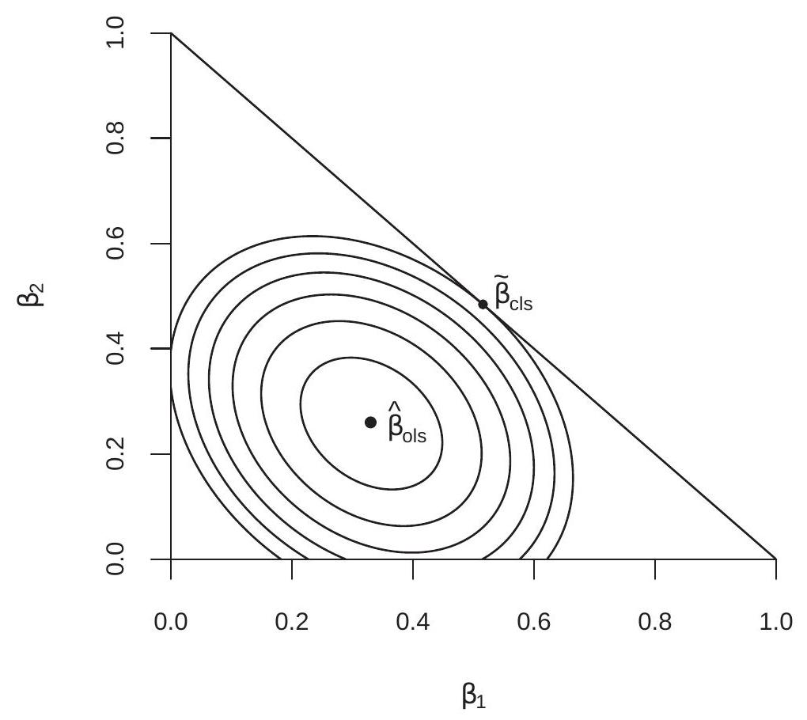
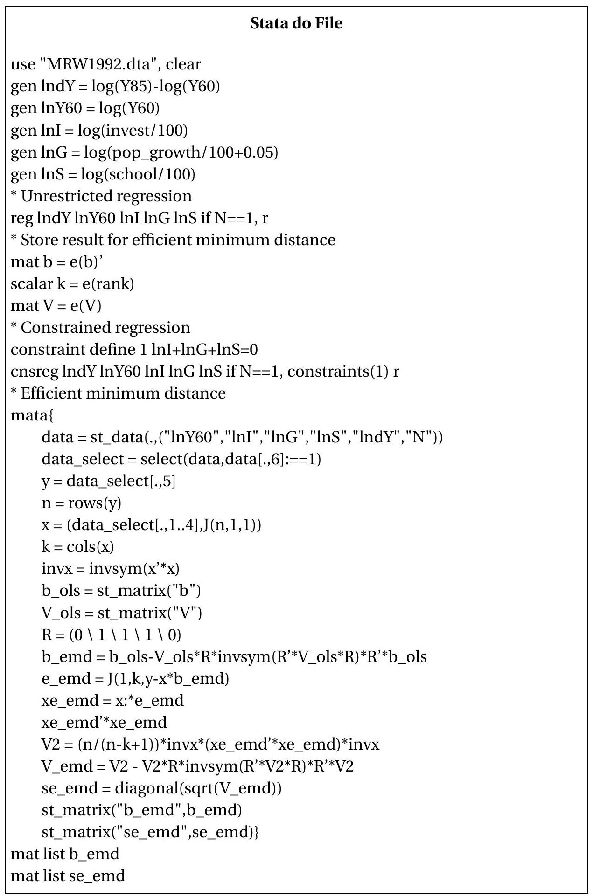
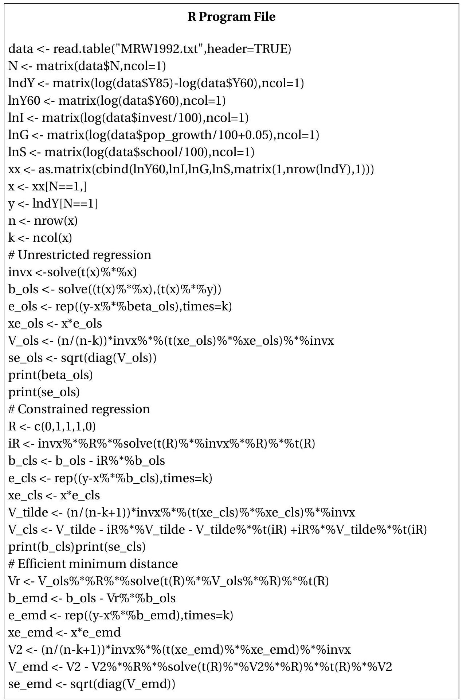
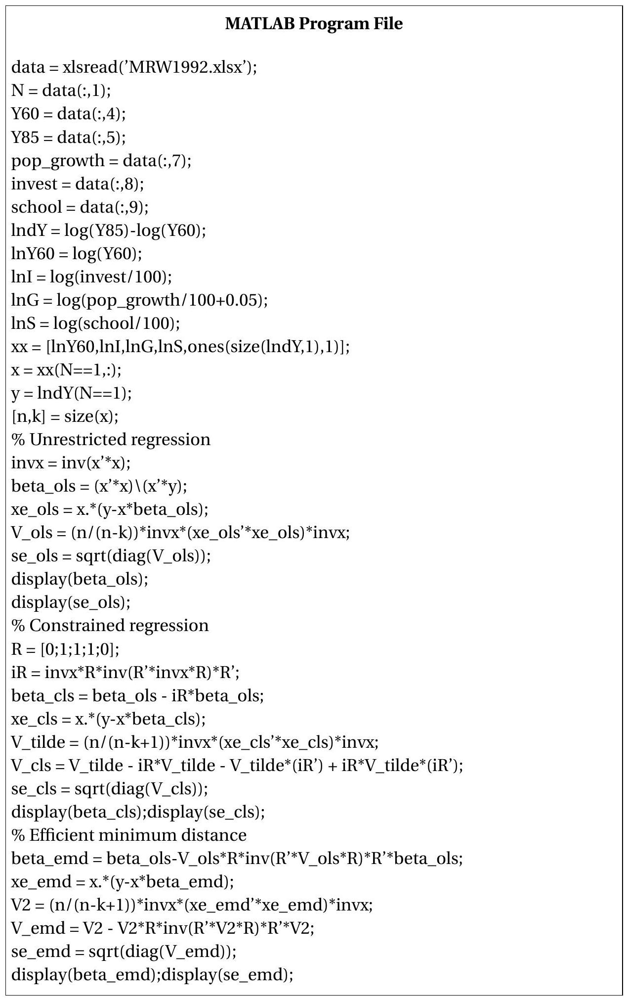

8 Restricted Estimation
8.1 Introduction
In the linear projection model
\[ \begin{aligned} Y &=X^{\prime} \beta+e \\ \mathbb{E}[X e] &=0 \end{aligned} \]
a common task is to impose a constraint on the coefficient vector \(\beta\). For example, partitioning \(X^{\prime}=\) \(\left(X_{1}^{\prime}, X_{2}^{\prime}\right)\) and \(\beta^{\prime}=\left(\beta_{1}^{\prime}, \beta_{2}^{\prime}\right)\) a typical constraint is an exclusion restriction of the form \(\beta_{2}=0\). In this case the constrained model is
\[ \begin{aligned} Y &=X_{1}^{\prime} \beta_{1}+e \\ \mathbb{E}[X e] &=0 . \end{aligned} \]
At first glance this appears the same as the linear projection model but there is one important difference: the error \(e\) is uncorrelated with the entire regressor vector \(X^{\prime}=\left(X_{1}^{\prime}, X_{2}^{\prime}\right)\) not just the included regressor \(X_{1}\).
In general, a set of \(q\) linear constraints on \(\beta\) takes the form
\[ \boldsymbol{R}^{\prime} \beta=\boldsymbol{c} \]
where \(\boldsymbol{R}\) is \(k \times q, \operatorname{rank}(\boldsymbol{R})=q<k\), and \(\boldsymbol{c}\) is \(q \times 1\). The assumption that \(\boldsymbol{R}\) is full rank means that the constraints are linearly independent (there are no redundant or contradictory constraints). We define the restricted parameter space \(B\) as the set of values of \(\beta\) which satisfy (8.1), that is
\[ B=\left\{\beta: \boldsymbol{R}^{\prime} \beta=\boldsymbol{c}\right\} . \]
Sometimes we will call (8.1) a constraint and sometimes a restriction. They are the same thing. Similarly sometimes we will call estimators which satisfy (8.1) constrained estimators and sometimes restricted estimators. They mean the same thing.
The constraint \(\beta_{2}=0\) discussed above is a special case of the constraint (8.1) with
\[ \boldsymbol{R}=\left(\begin{array}{c} 0 \\ \boldsymbol{I}_{k_{2}} \end{array}\right) \]
a selector matrix, and \(\boldsymbol{c}=0 .\) Another common restriction is that a set of coefficients sum to a known constant, i.e. \(\beta_{1}+\beta_{2}=1\). For example, this constraint arises in a constant-return-to-scale production function. Other common restrictions include the equality of coefficients \(\beta_{1}=\beta_{2}\), and equal and offsetting coefficients \(\beta_{1}=-\beta_{2}\).
A typical reason to impose a constraint is that we believe (or have information) that the constraint is true. By imposing the constraint we hope to improve estimation efficiency. The goal is to obtain consistent estimates with reduced variance relative to the unconstrained estimator.
The questions then arise: How should we estimate the coefficient vector \(\beta\) imposing the linear restriction (8.1)? If we impose such constraints what is the sampling distribution of the resulting estimator? How should we calculate standard errors? These are the questions explored in this chapter.
8.2 Constrained Least Squares
An intuitively appealing method to estimate a constrained linear projection is to minimize the least squares criterion subject to the constraint \(\boldsymbol{R}^{\prime} \beta=\boldsymbol{c}\).
The constrained least squares estimator is
\[ \widetilde{\beta}_{\mathrm{cls}}=\underset{\boldsymbol{R}^{\prime} \beta=\boldsymbol{c}}{\operatorname{argmin}} \operatorname{SSE}(\beta) \]
where
\[ \operatorname{SSE}(\beta)=\sum_{i=1}^{n}\left(Y_{i}-X_{i}^{\prime} \beta\right)^{2}=\boldsymbol{Y}^{\prime} \boldsymbol{Y}-2 \boldsymbol{Y}^{\prime} \boldsymbol{X} \beta+\beta^{\prime} \boldsymbol{X}^{\prime} \boldsymbol{X} \beta \]
The estimator \(\widetilde{\beta}_{\text {cls }}\) minimizes the sum of squared errors over all \(\beta \in B\), or equivalently such that the restriction (8.1) holds. We call \(\widetilde{\beta}_{\text {cls }}\) the constrained least squares (CLS) estimator. We use the convention of using a tilde ” \(\sim\) ” rather than a hat ” \(\wedge\) ” to indicate that \(\widetilde{\beta}_{\text {cls }}\) is a restricted estimator in contrast to the unrestricted least squares estimator \(\widehat{\beta}\) and write it as \(\widetilde{\beta}_{\text {cls }}\) to be clear that the estimation method is CLS.
One method to find the solution to (8.3) is the technique of Lagrange multipliers. The problem (8.3) is equivalent to finding the critical points of the Lagrangian
\[ \mathscr{L}(\beta, \lambda)=\frac{1}{2} \operatorname{SSE}(\beta)+\lambda^{\prime}\left(\boldsymbol{R}^{\prime} \beta-\boldsymbol{c}\right) \]
over \((\beta, \lambda)\) where \(\lambda\) is an \(s \times 1\) vector of Lagrange multipliers. The solution is a saddlepoint. The Lagrangian is minimized over \(\beta\) while maximized over \(\lambda\). The first-order conditions for the solution of (8.5) are
\[ \frac{\partial}{\partial \beta} \mathscr{L}\left(\widetilde{\beta}_{\mathrm{cls}}, \widetilde{\lambda}_{\mathrm{cls}}\right)=-\boldsymbol{X}^{\prime} \boldsymbol{Y}+\boldsymbol{X}^{\prime} \boldsymbol{X} \widetilde{\beta}_{\mathrm{cls}}+\boldsymbol{R} \widetilde{\lambda}_{\mathrm{cls}}=0 \]
and
\[ \frac{\partial}{\partial \lambda} \mathscr{L}\left(\widetilde{\beta}_{\mathrm{cls}}, \widetilde{\lambda}_{\mathrm{cls}}\right)=\boldsymbol{R}^{\prime} \widetilde{\beta}-\boldsymbol{c}=0 \]
Premultiplying (8.6) by \(\boldsymbol{R}^{\prime}\left(\boldsymbol{X}^{\prime} \boldsymbol{X}\right)^{-1}\) we obtain
\[ -\boldsymbol{R}^{\prime} \widehat{\beta}+\boldsymbol{R}^{\prime} \widetilde{\beta}_{\mathrm{cls}}+\boldsymbol{R}^{\prime}\left(\boldsymbol{X}^{\prime} \boldsymbol{X}\right)^{-1} \boldsymbol{R} \tilde{\lambda}_{\text {cls }}=0 \]
where \(\widehat{\beta}=\left(\boldsymbol{X}^{\prime} \boldsymbol{X}\right)^{-1} \boldsymbol{X}^{\prime} \boldsymbol{Y}\) is the unrestricted least squares estimator. Imposing \(\boldsymbol{R}^{\prime} \widetilde{\beta}_{\text {cls }}-\boldsymbol{c}=0\) from (8.7) and solving for \(\widetilde{\lambda}_{\text {cls we find }}\)
\[ \tilde{\lambda}_{\text {cls }}=\left[\boldsymbol{R}^{\prime}\left(\boldsymbol{X}^{\prime} \boldsymbol{X}\right)^{-1} \boldsymbol{R}\right]^{-1}\left(\boldsymbol{R}^{\prime} \widehat{\beta}-\boldsymbol{c}\right) . \]
Notice that \(\left(\boldsymbol{X}^{\prime} \boldsymbol{X}\right)^{-1}>0\) and \(\boldsymbol{R}\) full rank imply that \(\boldsymbol{R}^{\prime}\left(\boldsymbol{X}^{\prime} \boldsymbol{X}\right)^{-1} \boldsymbol{R}>0\) and is hence invertible. (See Section A.10.) Substituting this expression into (8.6) and solving for \(\widetilde{\beta}_{\text {cls }}\) we find the solution to the constrained minimization problem (8.3)
\[ \widetilde{\beta}_{\text {cls }}=\widehat{\beta}_{\text {ols }}-\left(\boldsymbol{X}^{\prime} \boldsymbol{X}\right)^{-1} \boldsymbol{R}\left[\boldsymbol{R}^{\prime}\left(\boldsymbol{X}^{\prime} \boldsymbol{X}\right)^{-1} \boldsymbol{R}\right]^{-1}\left(\boldsymbol{R}^{\prime} \widehat{\beta}_{\text {ols }}-\boldsymbol{c}\right) . \]
(See Exercise \(8.5\) to verify that (8.8) satisfies (8.1).)
This is a general formula for the CLS estimator. It also can be written as
\[ \widetilde{\beta}_{\mathrm{cls}}=\widehat{\beta}_{\mathrm{ols}}-\widehat{\boldsymbol{Q}}_{X X}^{-1} \boldsymbol{R}\left(\boldsymbol{R}^{\prime} \widehat{\boldsymbol{Q}}_{X X}^{-1} \boldsymbol{R}\right)^{-1}\left(\boldsymbol{R}^{\prime} \widehat{\beta}_{\mathrm{ols}}-\boldsymbol{c}\right) . \]
The CLS residuals are \(\widetilde{e}_{i}=Y_{i}-X_{i}^{\prime} \widetilde{\beta}_{\text {cls }}\) and are written in vector notation as \(\widetilde{\boldsymbol{e}}\).
To illustrate we generated a random sample of 100 observations for the variables \(\left(Y, X_{1}, X_{2}\right)\) and calculated the sum of squared errors function for the regression of \(Y\) on \(X_{1}\) and \(X_{2}\). Figure \(8.1\) displays contour plots of the sum of squared errors function. The center of the contour plots is the least squares minimizer \(\widehat{\beta}_{\text {ols }}=(0.33,0.26)^{\prime}\). Suppose it is desired to estimate the coefficients subject to the constraint \(\beta_{1}+\beta_{2}=1\). This constraint is displayed in the figure by the straight line. The constrained least squares estimator is the point on this straight line which yields the smallest sum of squared errors. This is the point which intersects with the lowest contour plot. The solution is the point where a contour plot is tangent to the constraint line and is marked as \(\widetilde{\beta}_{\mathrm{cls}}=(0.52,0.48)^{\prime}\).

Figure 8.1: Constrained Least Squares Criterion
In Stata constrained least squares is implemented using the cnsreg command.
8.3 Exclusion Restriction
While (8.8) is a general formula for CLS, in most cases the estimator can be found by applying least squares to a reparameterized equation. To illustrate let us return to the first example presented at the beginning of the chapter - a simple exclusion restriction. Recall that the unconstrained model is
\[ Y=X_{1}^{\prime} \beta_{1}+X_{2}^{\prime} \beta_{2}+e \]
the exclusion restriction is \(\beta_{2}=0\), and the constrained equation is
\[ Y=X_{1}^{\prime} \beta_{1}+e . \]
In this setting the CLS estimator is OLS of \(Y\) on \(X_{1}\). (See Exercise 8.1.) We can write this as
\[ \widetilde{\beta}_{1}=\left(\sum_{i=1}^{n} X_{1 i} X_{1 i}^{\prime}\right)^{-1}\left(\sum_{i=1}^{n} X_{1 i} Y_{i}\right) . \]
The CLS estimator of the entire vector \(\beta^{\prime}=\left(\beta_{1}^{\prime}, \beta_{2}^{\prime}\right)\) is
\[ \widetilde{\beta}=\left(\begin{array}{c} \widetilde{\beta}_{1} \\ 0 \end{array}\right) . \]
It is not immediately obvious but (8.8) and (8.13) are algebraically identical. To see this the first component of (8.8) with (8.2) is
\[ \widetilde{\beta}_{1}=\left(\begin{array}{ll} \boldsymbol{I}_{k_{2}} & 0 \end{array}\right)\left[\widehat{\beta}-\widehat{\boldsymbol{Q}}_{X X}^{-1}\left(\begin{array}{c} 0 \\ \boldsymbol{I}_{k_{2}} \end{array}\right)\left[\left(\begin{array}{ll} 0 & \boldsymbol{I}_{k_{2}} \end{array}\right) \widehat{\boldsymbol{Q}}_{X X}^{-1}\left(\begin{array}{c} 0 \\ \boldsymbol{I}_{k_{2}} \end{array}\right)\right]^{-1}\left(\begin{array}{cc} 0 & \boldsymbol{I}_{k_{2}} \end{array}\right) \widehat{\beta}\right] . \]
Using (3.39) this equals
\[ \begin{aligned} & \widetilde{\beta}_{1}=\widehat{\beta}_{1}-\widehat{\boldsymbol{Q}}^{12}\left(\widehat{\boldsymbol{Q}}^{22}\right)^{-1} \widehat{\beta}_{2} \\ & =\widehat{\beta}_{1}+\widehat{\boldsymbol{Q}}_{11 \cdot 2}^{-1} \widehat{\boldsymbol{Q}}_{12} \widehat{\boldsymbol{Q}}_{22}^{-1} \widehat{\boldsymbol{Q}}_{22 \cdot 1} \widehat{\beta}_{2} \\ & =\widehat{\boldsymbol{Q}}_{11 \cdot 2}^{-1}\left(\widehat{\boldsymbol{Q}}_{1 Y}-\widehat{\boldsymbol{Q}}_{12} \widehat{\boldsymbol{Q}}_{22}^{-1} \widehat{\boldsymbol{Q}}_{2 Y}\right) \\ & +\widehat{\boldsymbol{Q}}_{11 \cdot 2}^{-1} \widehat{\boldsymbol{Q}}_{12} \widehat{\boldsymbol{Q}}_{22}^{-1} \widehat{\boldsymbol{Q}}_{22 \cdot 1} \widehat{\boldsymbol{Q}}_{22 \cdot 1}^{-1}\left(\widehat{\boldsymbol{Q}}_{2 y}-\widehat{\boldsymbol{Q}}_{21} \widehat{\boldsymbol{Q}}_{11}^{-1} \widehat{\boldsymbol{Q}}_{1 Y}\right) \\ & =\widehat{\boldsymbol{Q}}_{11 \cdot 2}^{-1}\left(\widehat{\boldsymbol{Q}}_{1 Y}-\widehat{\boldsymbol{Q}}_{12} \widehat{\boldsymbol{Q}}_{22}^{-1} \widehat{\mathbf{Q}}_{21} \widehat{\boldsymbol{Q}}_{11}^{-1} \widehat{\boldsymbol{Q}}_{1 Y}\right) \\ & =\widehat{\boldsymbol{Q}}_{11 \cdot 2}^{-1}\left(\widehat{\boldsymbol{Q}}_{11}-\widehat{\boldsymbol{Q}}_{12} \widehat{\boldsymbol{Q}}_{22}^{-1} \widehat{\boldsymbol{Q}}_{21}\right) \widehat{\boldsymbol{Q}}_{11}^{-1} \widehat{\boldsymbol{Q}}_{1 Y} \\ & =\widehat{\boldsymbol{Q}}_{11}^{-1} \widehat{\boldsymbol{Q}}_{1 Y} \end{aligned} \]
which is (8.13) as originally claimed.
8.4 Finite Sample Properties
In this section we explore some of the properties of the CLS estimator in the linear regression model
\[ \begin{aligned} Y &=X^{\prime} \beta+e \\ \mathbb{E}[e \mid X] &=0 . \end{aligned} \]
First, it is useful to write the estimator and the residuals as linear functions of the error vector. These are algebraic relationships and do not rely on the linear regression assumptions. Theorem 8.1 The CLS estimator satisfies
\(\boldsymbol{R}^{\prime} \widehat{\beta}-\boldsymbol{c}=\boldsymbol{R}^{\prime}\left(\boldsymbol{X}^{\prime} \boldsymbol{X}\right)^{-1} \boldsymbol{X}^{\prime} \boldsymbol{e}\)
\(\widetilde{\beta}_{\mathrm{cls}}-\beta=\left(\left(\boldsymbol{X}^{\prime} \boldsymbol{X}\right)^{-1} \boldsymbol{X}^{\prime}-\boldsymbol{A} \boldsymbol{X}^{\prime}\right) \boldsymbol{e}\)
\(\widetilde{\boldsymbol{e}}=\left(\boldsymbol{I}-\boldsymbol{P}+\boldsymbol{X} \boldsymbol{A} \boldsymbol{X}^{\prime}\right) \boldsymbol{e}\)
\(\boldsymbol{I}_{n}-\boldsymbol{P}+\boldsymbol{X} \boldsymbol{A} \boldsymbol{X}^{\prime}\) is symmetric and idempotent
\(\operatorname{tr}\left(\boldsymbol{I}_{n}-\boldsymbol{P}+\boldsymbol{X} \boldsymbol{A} \boldsymbol{X}^{\prime}\right)=n-k+q\)
where \(\boldsymbol{P}=\boldsymbol{X}\left(\boldsymbol{X}^{\prime} \boldsymbol{X}\right)^{-1} \boldsymbol{X}^{\prime}\) and \(\boldsymbol{A}=\left(\boldsymbol{X}^{\prime} \boldsymbol{X}\right)^{-1} \boldsymbol{R}\left(\boldsymbol{R}^{\prime}\left(\boldsymbol{X}^{\prime} \boldsymbol{X}\right)^{-1} \boldsymbol{R}\right)^{-1} \boldsymbol{R}^{\prime}\left(\boldsymbol{X}^{\prime} \boldsymbol{X}\right)^{-1}\)
For a proof see Exercise 8.6.
Given the linearity of Theorem 8.1.2 it is not hard to show that the CLS estimator is unbiased for \(\beta\).
Theorem 8.2 In the linear regression model (8.14)-(8.15) under (8.1), \(\mathbb{E}\left[\widetilde{\beta}_{\mathrm{cls}} \mid \boldsymbol{X}\right]=\beta\)
For a proof see Exercise 8.7.
We can also calculate the covariance matrix of \(\widetilde{\beta}_{\text {cls }}\). First, for simplicity take the case of conditional homoskedasticity.
Theorem 8.3 In the homoskedastic linear regression model (8.14)-(8.15) with \(\mathbb{E}\left[e^{2} \mid X\right]=\sigma^{2}\), under (8.1),
\[ \begin{aligned} \boldsymbol{V}_{\widetilde{\beta}}^{0} &=\operatorname{var}\left[\widetilde{\beta}_{\mathrm{cls}} \mid \boldsymbol{X}\right] \\ &=\left(\left(\boldsymbol{X}^{\prime} \boldsymbol{X}\right)^{-1}-\left(\boldsymbol{X}^{\prime} \boldsymbol{X}\right)^{-1} \boldsymbol{R}\left(\boldsymbol{R}^{\prime}\left(\boldsymbol{X}^{\prime} \boldsymbol{X}\right)^{-1} \boldsymbol{R}\right)^{-1} \boldsymbol{R}^{\prime}\left(\boldsymbol{X}^{\prime} \boldsymbol{X}\right)^{-1}\right) \sigma^{2} \end{aligned} \]
For a proof see Exercise 8.8.
We use the \(\boldsymbol{V}_{\tilde{\beta}}^{0}\) notation to emphasize that this is the covariance matrix under the assumption of conditional homoskedasticity.
For inference we need an estimate of \(\boldsymbol{V}_{\widetilde{\beta}}^{0}\). A natural estimator is
\[ \widehat{\boldsymbol{V}}_{\widetilde{\beta}}^{0}=\left(\left(\boldsymbol{X}^{\prime} \boldsymbol{X}\right)^{-1}-\left(\boldsymbol{X}^{\prime} \boldsymbol{X}\right)^{-1} \boldsymbol{R}\left(\boldsymbol{R}^{\prime}\left(\boldsymbol{X}^{\prime} \boldsymbol{X}\right)^{-1} \boldsymbol{R}\right)^{-1} \boldsymbol{R}^{\prime}\left(\boldsymbol{X}^{\prime} \boldsymbol{X}\right)^{-1}\right) s_{\mathrm{cls}}^{2} \]
where
\[ s_{\mathrm{cls}}^{2}=\frac{1}{n-k+q} \sum_{i=1}^{n} \widetilde{e}_{i}^{2} \]
is a biased-corrected estimator of \(\sigma^{2}\). Standard errors for the components of \(\beta\) are then found by taking the squares roots of the diagonal elements of \(\widehat{\boldsymbol{V}}_{\widetilde{\beta}}\), for example
\[ s\left(\widehat{\beta}_{j}\right)=\sqrt{\left[\widehat{\boldsymbol{V}}_{\widetilde{\beta}}^{0}\right]_{j j}} . \]
The estimator (8.16) has the property that it is unbiased for \(\sigma^{2}\) under conditional homoskedasticity. To see this, using the properties of Theorem 8.1,
\[ \begin{aligned} (n-k+q) s_{\mathrm{cls}}^{2} &=\widetilde{\boldsymbol{e}}^{\prime} \widetilde{\boldsymbol{e}} \\ &=\boldsymbol{e}^{\prime}\left(\boldsymbol{I}_{n}-\boldsymbol{P}+\boldsymbol{X} \boldsymbol{A} \boldsymbol{X}^{\prime}\right)\left(\boldsymbol{I}_{n}-\boldsymbol{P}+\boldsymbol{X} \boldsymbol{A} \boldsymbol{X}^{\prime}\right) \boldsymbol{e} \\ &=\boldsymbol{e}^{\prime}\left(\boldsymbol{I}_{n}-\boldsymbol{P}+\boldsymbol{X} \boldsymbol{A} \boldsymbol{X}^{\prime}\right) \boldsymbol{e} . \end{aligned} \]
We defer the remainder of the proof to Exercise 8.9.
Theorem 8.4 In the homoskedastic linear regression model (8.14)-(8.15) with \(\mathbb{E}\left[e^{2} \mid X\right]=\sigma^{2}\), under (8.1), \(\mathbb{E}\left[s_{\text {cls }}^{2} \mid \boldsymbol{X}\right]=\sigma^{2}\) and \(\mathbb{E}\left[\widehat{\boldsymbol{V}}_{\widetilde{\beta}}^{0} \mid \boldsymbol{X}\right]=\boldsymbol{V}_{\widetilde{\beta}}^{0} .\)
Now consider the distributional properties in the normal regression model \(Y=X^{\prime} \beta+e\) with \(e \sim\) \(\mathrm{N}\left(0, \sigma^{2}\right)\). By the linearity of Theorem 8.1.2, conditional on \(\boldsymbol{X}, \widetilde{\beta}_{\text {cls }}-\beta\) is normal. Given Theorems \(8.2\) and \(8.3\) we deduce that \(\widetilde{\beta}_{\mathrm{cls}} \sim \mathrm{N}\left(\beta, \boldsymbol{V}_{\widetilde{\beta}}^{0}\right)\).
Similarly, from Exericise \(8.1\) we know \(\widetilde{\boldsymbol{e}}=\left(\boldsymbol{I}_{n}-\boldsymbol{P}+\boldsymbol{X} \boldsymbol{A} \boldsymbol{X}^{\prime}\right) \boldsymbol{e}\) is linear in \(\boldsymbol{e}\) so is also conditionally normal. Furthermore, since \(\left(\boldsymbol{I}_{n}-\boldsymbol{P}+\boldsymbol{X} \boldsymbol{A} \boldsymbol{X}^{\prime}\right)\left(\boldsymbol{X}\left(\boldsymbol{X}^{\prime} \boldsymbol{X}\right)^{-1}-\boldsymbol{X} \boldsymbol{A}\right)=0, \widetilde{\boldsymbol{e}}\) and \(\widetilde{\beta}_{\text {cls }}\) are uncorrelated and thus independent. Thus \(s_{\text {cls }}^{2}\) and \(\widetilde{\beta}_{\text {cls }}\) are independent.
From (8.17) and the fact that \(\boldsymbol{I}_{n}-\boldsymbol{P}+\boldsymbol{X} \boldsymbol{A} \boldsymbol{X}^{\prime}\) is idempotent with rank \(n-k+q\) it follows that
\[ s_{\text {cls }}^{2} \sim \sigma^{2} \chi_{n-k+q}^{2} /(n-k+q) . \]
It follows that the \(\mathrm{t}\)-statistic has the exact distribution
\[ T=\frac{\widehat{\beta}_{j}-\beta_{j}}{s\left(\widehat{\beta}_{j}\right)} \sim \frac{\mathrm{N}(0,1)}{\sqrt{\chi_{n-k+q}^{2} /(n-k+q)}} \sim t_{n-k+q} \]
a student \(t\) distribution with \(n-k+q\) degrees of freedom.
The relevance of this calculation is that the “degrees of freedom” for CLS regression equal \(n-k+q\) rather than \(n-k\) as in OLS. Essentially the model has \(k-q\) free parameters instead of \(k\). Another way of thinking about this is that estimation of a model with \(k\) coefficients and \(q\) restrictions is equivalent to estimation with \(k-q\) coefficients.
We summarize the properties of the normal regression model. Theorem 8.5 In the normal linear regression model (8.14)-(8.15) with constraint (8.1),
\[ \begin{aligned} \widetilde{\beta}_{\mathrm{cls}} \sim \mathrm{N}\left(\beta, \boldsymbol{V}_{\widetilde{\beta}}^{0}\right) \\ \frac{(n-k+q) s_{\mathrm{cls}}^{2}}{\sigma^{2}} \sim \chi_{n-k+q}^{2} \\ T & \sim t_{n-k+q} . \end{aligned} \]
An interesting relationship is that in the homoskedastic regression model
\[ \begin{aligned} \operatorname{cov}\left(\widehat{\beta}_{\mathrm{ols}}-\widetilde{\beta}_{\mathrm{cls}}, \widetilde{\beta}_{\mathrm{cls}} \mid \boldsymbol{X}\right) &=\mathbb{E}\left[\left(\widehat{\beta}_{\mathrm{ols}}-\widetilde{\beta}_{\mathrm{cls}}\right)\left(\widetilde{\beta}_{\mathrm{cls}}-\beta\right)^{\prime} \mid \boldsymbol{X}\right] \\ &=\mathbb{E}\left[\boldsymbol{A} \boldsymbol{X}^{\prime} \boldsymbol{e} \boldsymbol{e}^{\prime}\left(\boldsymbol{X}\left(\boldsymbol{X}^{\prime} \boldsymbol{X}\right)^{-1}-\boldsymbol{X} \boldsymbol{A}\right) \mid \boldsymbol{X}\right] \\ &=\boldsymbol{A} \boldsymbol{X}^{\prime}\left(\boldsymbol{X}\left(\boldsymbol{X}^{\prime} \boldsymbol{X}\right)^{-1}-\boldsymbol{X} \boldsymbol{A}\right) \sigma^{2}=0 . \end{aligned} \]
This means that \(\widehat{\beta}_{\text {ols }}-\widetilde{\beta}_{\text {cls }}\) and \(\widetilde{\beta}_{\text {cls }}\) are conditionally uncorrelated and hence independent. A corollary is
\[ \operatorname{cov}\left(\widehat{\beta}_{\text {ols }}, \widetilde{\beta}_{\text {cls }} \mid \boldsymbol{X}\right)=\operatorname{var}\left[\widetilde{\beta}_{\text {cls }} \mid \boldsymbol{X}\right] . \]
A second corollary is
\[ \begin{aligned} \operatorname{var}\left[\widehat{\beta}_{\mathrm{ols}}-\widetilde{\beta}_{\mathrm{cls}} \mid \boldsymbol{X}\right] &=\operatorname{var}\left[\widehat{\beta}_{\mathrm{ols}} \mid \boldsymbol{X}\right]-\operatorname{var}\left[\widetilde{\beta}_{\mathrm{cls}} \mid \boldsymbol{X}\right] \\ &=\left(\boldsymbol{X}^{\prime} \boldsymbol{X}\right)^{-1} \boldsymbol{R}\left(\boldsymbol{R}^{\prime}\left(\boldsymbol{X}^{\prime} \boldsymbol{X}\right)^{-1} \boldsymbol{R}\right)^{-1} \boldsymbol{R}^{\prime}\left(\boldsymbol{X}^{\prime} \boldsymbol{X}\right)^{-1} \sigma^{2} \end{aligned} \]
This also shows that the difference between the CLS and OLS variances matrices equals
\[ \operatorname{var}\left[\widehat{\beta}_{\text {ols }} \mid \boldsymbol{X}\right]-\operatorname{var}\left[\widetilde{\beta}_{\mathrm{cls}} \mid \boldsymbol{X}\right]=\left(\boldsymbol{X}^{\prime} \boldsymbol{X}\right)^{-1} \boldsymbol{R}\left(\boldsymbol{R}^{\prime}\left(\boldsymbol{X}^{\prime} \boldsymbol{X}\right)^{-1} \boldsymbol{R}\right)^{-1} \boldsymbol{R}^{\prime}\left(\boldsymbol{X}^{\prime} \boldsymbol{X}\right)^{-1} \sigma^{2} \geq 0 \]
the final equality meaning positive semi-definite. It follows that \(\operatorname{var}\left[\widehat{\beta}_{\text {ols }} \mid \boldsymbol{X}\right] \geq \operatorname{var}\left[\widetilde{\beta}_{\text {cls }} \mid \boldsymbol{X}\right]\) in the positive definite sense, and thus CLS is more efficient than OLS. Both estimators are unbiased (in the linear regression model) and CLS has a lower covariance matrix (in the linear homoskedastic regression model).
The relationship (8.18) is rather interesting and will appear again. The expression says that the variance of the difference between the estimators is equal to the difference between the variances. This is rather special. It occurs generically when we are comparing an efficient and an inefficient estimator. We call (8.18) the Hausman Equality as it was first pointed out in econometrics by Hausman (1978).
8.5 Minimum Distance
The previous section explored the finite sample distribution theory under the assumptions of the linear regression model, homoskedastic regression model, and normal regression model. We now return to the general projection model where we do not impose linearity, homoskedasticity, nor normality. We are interested in the question: Can we do better than CLS in this setting?
A minimum distance estimator tries to find a parameter value satisfying the constraint which is as close as possible to the unconstrained estimator. Let \(\widehat{\beta}\) be the unconstrained least squares estimator, and for some \(k \times k\) positive definite weight matrix \(\widehat{W}\) define the quadratic criterion function
\[ J(\beta)=n(\widehat{\beta}-\beta)^{\prime} \widehat{\boldsymbol{W}}(\widehat{\beta}-\beta) . \]
This is a (squared) weighted Euclidean distance between \(\widehat{\beta}\) and \(\beta . J(\beta)\) is small if \(\beta\) is close to \(\widehat{\beta}\), and is minimized at zero only if \(\beta=\widehat{\beta}\). A minimum distance estimator \(\widetilde{\beta}_{\mathrm{md}}\) for \(\beta\) minimizes \(J(\beta)\) subject to the constraint (8.1), that is,
\[ \widetilde{\beta}_{\mathrm{md}}=\underset{\boldsymbol{R}^{\prime} \beta=\boldsymbol{c}}{\operatorname{argmin}} J(\beta) . \]
The CLS estimator is the special case when \(\widehat{\boldsymbol{W}}=\widehat{\boldsymbol{Q}}_{X X}\) and we write this criterion function as
\[ J^{0}(\beta)=n(\widehat{\beta}-\beta)^{\prime} \widehat{\boldsymbol{Q}}_{X X}(\widehat{\beta}-\beta) . \]
To see the equality of CLS and minimum distance rewrite the least squares criterion as follows. Substitute the unconstrained least squares fitted equation \(Y_{i}=X_{i}^{\prime} \widehat{\beta}+\widehat{e}_{i}\) into \(\operatorname{SSE}(\beta)\) to obtain
\[ \begin{aligned} \operatorname{SSE}(\beta) &=\sum_{i=1}^{n}\left(Y_{i}-X_{i}^{\prime} \beta\right)^{2} \\ &=\sum_{i=1}^{n}\left(X_{i}^{\prime} \widehat{\beta}+\widehat{e}_{i}-X_{i}^{\prime} \beta\right)^{2} \\ &=\sum_{i=1}^{n} \widehat{e}_{i}^{2}+(\widehat{\beta}-\beta)^{\prime}\left(\sum_{i=1}^{n} X_{i} X_{i}^{\prime}\right)(\widehat{\beta}-\beta) \\ &=n \widehat{\sigma}^{2}+J^{0}(\beta) \end{aligned} \]
where the third equality uses the fact that \(\sum_{i=1}^{n} X_{i} \widehat{e}_{i}=0\), and the last line uses \(\sum_{i=1}^{n} X_{i} X_{i}^{\prime}=n \widehat{\mathbf{Q}}_{X X}\). The expression (8.21) only depends on \(\beta\) through \(J^{0}(\beta)\). Thus minimization of \(\operatorname{SSE}(\beta)\) and \(J^{0}(\beta)\) are equivalent, and hence \(\widetilde{\beta}_{\mathrm{md}}=\widetilde{\widetilde{\beta}}_{\text {cls }}\) when \(\widehat{\boldsymbol{W}}=\widehat{\boldsymbol{Q}}_{X X}\).
We can solve for \(\widetilde{\beta}_{\mathrm{md}}\) explicitly by the method of Lagrange multipliers. The Lagrangian is
\[ \mathscr{L}(\beta, \lambda)=\frac{1}{2} J(\beta, \widehat{\boldsymbol{W}})+\lambda^{\prime}\left(\boldsymbol{R}^{\prime} \beta-\boldsymbol{c}\right) . \]
The solution to the pair of first order conditions is
\[ \begin{aligned} &\widetilde{\lambda}_{\mathrm{md}}=n\left(\boldsymbol{R}^{\prime} \widehat{\boldsymbol{W}}^{-1} \boldsymbol{R}\right)^{-1}\left(\boldsymbol{R}^{\prime} \widehat{\boldsymbol{\beta}}-\boldsymbol{c}\right) \\ &\widetilde{\beta}_{\mathrm{md}}=\widehat{\boldsymbol{\beta}}-\widehat{\boldsymbol{W}}^{-1} \boldsymbol{R}\left(\boldsymbol{R}^{\prime} \widehat{\boldsymbol{W}}^{-1} \boldsymbol{R}\right)^{-1}\left(\boldsymbol{R}^{\prime} \widehat{\beta}-\boldsymbol{c}\right) . \end{aligned} \]
(See Exercise 8.10.) Comparing (8.23) with (8.9) we can see that \(\widetilde{\beta}_{\mathrm{md}}\) specializes to \(\widetilde{\beta}_{\text {cls }}\) when we set \(\widehat{\boldsymbol{W}}=\widehat{\boldsymbol{Q}}_{X X}\)
An obvious question is which weight matrix \(\widehat{\boldsymbol{W}}\) is best. We will address this question after we derive the asymptotic distribution for a general weight matrix.
8.6 Asymptotic Distribution
We first show that the class of minimum distance estimators are consistent for the population parameters when the constraints are valid.
Assumption 8.1 \(\boldsymbol{R}^{\prime} \beta=\boldsymbol{c}\) where \(\boldsymbol{R}\) is \(k \times q\) with \(\operatorname{rank}(\boldsymbol{R})=q\). Assumption 8.2 \(\widehat{W} \underset{p}{\longrightarrow} W>0\).
Theorem 8.6 Consistency Under Assumptions 7.1, 8.1, and 8.2, \(\widetilde{\beta}_{\mathrm{md}} \underset{p}{\longrightarrow} \beta\) as \(n \rightarrow \infty\).
For a proof see Exercise 8.11.
Theorem \(8.6\) shows that consistency holds for any weight matrix with a positive definite limit so includes the CLS estimator.
Similarly, the constrained estimators are asymptotically normally distributed.
Theorem 8.7 Asymptotic Normality Under Assumptions 7.2, 8.1, and 8.2,
\[ \sqrt{n}\left(\widetilde{\beta}_{\mathrm{md}}-\beta\right) \underset{d}{\longrightarrow} \mathrm{N}\left(0, \boldsymbol{V}_{\beta}(\boldsymbol{W})\right) \]
as \(n \rightarrow \infty\), where
\[ \begin{gathered} \boldsymbol{V}_{\beta}(\boldsymbol{W})=\boldsymbol{V}_{\beta}-\boldsymbol{W}^{-1} \boldsymbol{R}\left(\boldsymbol{R}^{\prime} \boldsymbol{W}^{-1} \boldsymbol{R}\right)^{-1} \boldsymbol{R}^{\prime} \boldsymbol{V}_{\beta} \\ -\boldsymbol{V}_{\beta} \boldsymbol{R}\left(\boldsymbol{R}^{\prime} \boldsymbol{W}^{-1} \boldsymbol{R}\right)^{-1} \boldsymbol{R}^{\prime} \boldsymbol{W}^{-1} \\ +\boldsymbol{W}^{-1} \boldsymbol{R}\left(\boldsymbol{R}^{\prime} \boldsymbol{W}^{-1} \boldsymbol{R}\right)^{-1} \boldsymbol{R}^{\prime} \boldsymbol{V}_{\beta} \boldsymbol{R}\left(\boldsymbol{R}^{\prime} \boldsymbol{W}^{-1} \boldsymbol{R}\right)^{-1} \boldsymbol{R}^{\prime} \boldsymbol{W}^{-1} \end{gathered} \]
and \(\boldsymbol{V}_{\beta}=\boldsymbol{Q}_{X X}^{-1} \Omega \boldsymbol{Q}_{X X}^{-1}\)
For a proof see Exercise 8.12.
Theorem \(8.7\) shows that the minimum distance estimator is asymptotically normal for all positive definite weight matrices. The asymptotic variance depends on \(\boldsymbol{W}\). The theorem includes the CLS estimator as a special case by setting \(\boldsymbol{W}=\boldsymbol{Q}_{X X}\).
Theorem 8.8 Asymptotic Distribution of CLS Estimator Under Assumptions \(7.2\) and 8.1, as \(n \rightarrow \infty\)
\[ \sqrt{n}\left(\widetilde{\beta}_{\mathrm{cls}}-\beta\right) \underset{d}{\longrightarrow} \mathrm{N}\left(0, \boldsymbol{V}_{\mathrm{cls}}\right) \]
where
\[ \begin{aligned} \boldsymbol{V}_{\mathrm{cls}} &=\boldsymbol{V}_{\beta}-\boldsymbol{Q}_{X X}^{-1} \boldsymbol{R}\left(\boldsymbol{R}^{\prime} \boldsymbol{Q}_{X X}^{-1} \boldsymbol{R}\right)^{-1} \boldsymbol{R}^{\prime} \boldsymbol{V}_{\beta} \\ &-\boldsymbol{V}_{\beta} \boldsymbol{R}\left(\boldsymbol{R}^{\prime} \boldsymbol{Q}_{X X}^{-1} \boldsymbol{R}\right)^{-1} \boldsymbol{R}^{\prime} \boldsymbol{Q}_{X X}^{-1} \\ &+\boldsymbol{Q}_{X X}^{-1} \boldsymbol{R}\left(\boldsymbol{R}^{\prime} \boldsymbol{Q}_{X X}^{-1} \boldsymbol{R}\right)^{-1} \boldsymbol{R}^{\prime} \boldsymbol{V}_{\beta} \boldsymbol{R}\left(\boldsymbol{R}^{\prime} \boldsymbol{Q}_{X X}^{-1} \boldsymbol{R}\right)^{-1} \boldsymbol{R}^{\prime} \boldsymbol{Q}_{X X}^{-1} \end{aligned} \]
For a proof see Exercise 8.13.
8.7 Variance Estimation and Standard Errors
Earlier we introduced the covariance matrix estimator under the assumption of conditional homoskedasticity. We now introduce an estimator which does not impose homoskedasticity.
The asymptotic covariance matrix \(\boldsymbol{V}_{\text {cls }}\) may be estimated by replacing \(\boldsymbol{V}_{\beta}\) with a consistent estimator such as \(\widehat{\boldsymbol{V}}_{\beta}\). A more efficient estimator can be obtained by using the restricted coefficient estimator which we now show. Given the constrained least squares squares residuals \(\widetilde{e}_{i}=Y_{i}-X_{i}^{\prime} \widetilde{\beta}_{\text {cls }}\) we can estimate the matrix \(\Omega=\mathbb{E}\left[X X^{\prime} e^{2}\right]\) by
\[ \widetilde{\Omega}=\frac{1}{n-k+q} \sum_{i=1}^{n} X_{i} X_{i}^{\prime} \widetilde{e}_{i}^{2} . \]
Notice that we have used an adjusted degrees of freedom. This is an \(a d\) hoc adjustment designed to mimic that used for estimation of the error variance \(\sigma^{2}\). The moment estimator of \(\boldsymbol{V}_{\beta}\) is
\[ \widetilde{\boldsymbol{V}}_{\beta}=\widehat{\boldsymbol{Q}}_{X X}^{-1} \widetilde{\Omega} \widehat{\boldsymbol{Q}}_{X X}^{-1} \]
and that for \(\boldsymbol{V}_{\mathrm{cls}}\) is
\[ \begin{aligned} \widetilde{\boldsymbol{V}}_{\mathrm{cls}} &=\widetilde{\boldsymbol{V}}_{\beta}-\widehat{\boldsymbol{Q}}_{X X}^{-1} \boldsymbol{R}\left(\boldsymbol{R}^{\prime} \widehat{\boldsymbol{Q}}_{X X}^{-1} \boldsymbol{R}\right)^{-1} \boldsymbol{R}^{\prime} \widetilde{\boldsymbol{V}}_{\beta} \\ &-\widetilde{\boldsymbol{V}}_{\beta} \boldsymbol{R}\left(\boldsymbol{R}^{\prime} \widehat{\boldsymbol{Q}}_{X X}^{-1} \boldsymbol{R}\right)^{-1} \boldsymbol{R}^{\prime} \widehat{\boldsymbol{Q}}_{\boldsymbol{x x}}^{-1} \\ &+\widehat{\boldsymbol{Q}}_{X X}^{-1} \boldsymbol{R}\left(\boldsymbol{R}^{\prime} \widehat{\boldsymbol{Q}}_{X X}^{-1} \boldsymbol{R}\right)^{-1} \boldsymbol{R}^{\prime} \widetilde{\boldsymbol{V}}_{\beta} \boldsymbol{R}\left(\boldsymbol{R}^{\prime} \widehat{\boldsymbol{Q}}_{X X}^{-1} \boldsymbol{R}\right)^{-1} \boldsymbol{R}^{\prime} \widehat{\boldsymbol{Q}}_{X X}^{-1} \end{aligned} \]
We can calculate standard errors for any linear combination \(h^{\prime} \widetilde{\beta}_{\text {cls }}\) such that \(h\) does not lie in the range space of \(\boldsymbol{R}\). A standard error for \(h^{\prime} \widetilde{\beta}\) is
\[ s\left(h^{\prime} \widetilde{\boldsymbol{\beta}}_{\mathrm{cls}}\right)=\left(n^{-1} h^{\prime} \tilde{\boldsymbol{V}}_{\mathrm{cls}} h\right)^{1 / 2} . \]
8.8 Efficient Minimum Distance Estimator
Theorem \(8.7\) shows that minimum distance estimators, which include CLS as a special case, are asymptotically normal with an asymptotic covariance matrix which depends on the weight matrix \(\boldsymbol{W}\). The asymptotically optimal weight matrix is the one which minimizes the asymptotic variance \(\boldsymbol{V}_{\beta}(\boldsymbol{W})\). This turns out to be \(\boldsymbol{W}=\boldsymbol{V}_{\beta}^{-1}\) as is shown in Theorem \(8.9\) below. Since \(\boldsymbol{V}_{\beta}^{-1}\) is unknown this weight matrix cannot be used for a feasible estimator but we can replace \(\boldsymbol{V}_{\beta}^{-1}\) with a consistent estimator \(\widehat{\boldsymbol{V}}_{\beta}^{-1}\) and the asymptotic distribution (and efficiency) are unchanged. We call the minimum distance estimator with \(\widehat{\boldsymbol{W}}=\widehat{\boldsymbol{V}}_{\beta}^{-1}\) the efficient minimum distance estimator and takes the form
\[ \widetilde{\beta}_{\text {emd }}=\widehat{\beta}-\widehat{\boldsymbol{V}}_{\beta} \boldsymbol{R}\left(\boldsymbol{R}^{\prime} \widehat{\boldsymbol{V}}_{\beta} \boldsymbol{R}\right)^{-1}\left(\boldsymbol{R}^{\prime} \widehat{\beta}-\boldsymbol{c}\right) . \]
The asymptotic distribution of (8.25) can be deduced from Theorem 8.7. (See Exercises \(8.14\) and 8.15, and the proof in Section 8.16.)
Theorem 8.9 Efficient Minimum Distance Estimator Under Assumptions \(7.2\) and 8.1,
\[ \sqrt{n}\left(\widetilde{\beta}_{\mathrm{emd}}-\beta\right) \underset{d}{\longrightarrow} \mathrm{N}\left(0, \boldsymbol{V}_{\beta, \mathrm{emd}}\right) \]
as \(n \rightarrow \infty\), where
\[ \boldsymbol{V}_{\beta, \mathrm{emd}}=\boldsymbol{V}_{\beta}-\boldsymbol{V}_{\beta} \boldsymbol{R}\left(\boldsymbol{R}^{\prime} \boldsymbol{V}_{\beta} \boldsymbol{R}\right)^{-1} \boldsymbol{R}^{\prime} \boldsymbol{V}_{\beta} \]
Since
\[ \boldsymbol{V}_{\beta, \mathrm{emd}} \leq \boldsymbol{V}_{\beta} \]
the estimator (8.25) has lower asymptotic variance than the unrestricted estimator. Furthermore, for any \(\boldsymbol{W}\),
\[ \boldsymbol{V}_{\beta, \mathrm{emd}} \leq \boldsymbol{V}_{\beta}(\boldsymbol{W}) \]
so (8.25) is asymptotically efficient in the class of minimum distance estimators.
Theorem \(8.9\) shows that the minimum distance estimator with the smallest asymptotic variance is (8.25). One implication is that the constrained least squares estimator is generally inefficient. The interesting exception is the case of conditional homoskedasticity in which case the optimal weight matrix is \(\boldsymbol{W}=\left(\boldsymbol{V}_{\beta}^{0}\right)^{-1}\) so in this case CLS is an efficient minimum distance estimator. Otherwise when the error is conditionally heteroskedastic there are asymptotic efficiency gains by using minimum distance rather than least squares.
The fact that CLS is generally inefficient is counter-intuitive and requires some reflection. Standard intuition suggests to apply the same estimation method (least squares) to the unconstrained and constrained models and this is the common empirical practice. But Theorem \(8.9\) shows that this is inefficient. Why? The reason is that the least squares estimator does not make use of the regressor \(X_{2}\). It ignores the information \(\mathbb{E}\left[X_{2} e\right]=0\). This information is relevant when the error is heteroskedastic and the excluded regressors are correlated with the included regressors.
Inequality (8.27) shows that the efficient minimum distance estimator \(\widetilde{\beta}_{\text {emd }}\) has a smaller asymptotic variance than the unrestricted least squares estimator \(\widehat{\beta}\). This means that efficient estimation is attained by imposing correct restrictions when we use the minimum distance method.
8.9 Exclusion Restriction Revisited
We return to the example of estimation with a simple exclusion restriction. The model is
\[ Y=X_{1}^{\prime} \beta_{1}+X_{2}^{\prime} \beta_{2}+e \]
with the exclusion restriction \(\beta_{2}=0\). We have introduced three estimators of \(\beta_{1}\). The first is unconstrained least squares applied to (8.10) which can be written as \(\widehat{\beta}_{1}=\widehat{\boldsymbol{Q}}_{11 \cdot 2}^{-1} \widehat{\boldsymbol{Q}}_{1 Y \cdot 2}\). From Theorem \(7.25\) and equation (7.14) its asymptotic variance is
\[ \operatorname{avar}\left[\widehat{\beta}_{1}\right]=\boldsymbol{Q}_{11 \cdot 2}^{-1}\left(\Omega_{11}-\boldsymbol{Q}_{12} \boldsymbol{Q}_{22}^{-1} \Omega_{21}-\Omega_{12} \boldsymbol{Q}_{22}^{-1} \boldsymbol{Q}_{21}+\boldsymbol{Q}_{12} \boldsymbol{Q}_{22}^{-1} \Omega_{22} \boldsymbol{Q}_{22}^{-1} \boldsymbol{Q}_{21}\right) \boldsymbol{Q}_{11 \cdot 2}^{-1} \]
The second estimator of \(\beta_{1}\) is CLS, which can be written as \(\widetilde{\beta}_{1}=\widehat{\boldsymbol{Q}}_{11}^{-1} \widehat{\boldsymbol{Q}}_{1 Y}\). Its asymptotic variance can be deduced from Theorem 8.8, but it is simpler to apply the CLT directly to show that
\[ \operatorname{avar}\left[\widetilde{\beta}_{1}\right]=\boldsymbol{Q}_{11}^{-1} \Omega_{11} \boldsymbol{Q}_{11}^{-1} . \]
The third estimator of \(\beta_{1}\) is efficient minimum distance. Applying (8.25), it equals
\[ \bar{\beta}_{1}=\widehat{\beta}_{1}-\widehat{\boldsymbol{V}}_{12} \widehat{\boldsymbol{V}}_{22}^{-1} \widehat{\beta}_{2} \]
where we have partitioned
\[ \widehat{\boldsymbol{V}}_{\beta}=\left[\begin{array}{ll} \widehat{\boldsymbol{V}}_{11} & \widehat{\boldsymbol{V}}_{12} \\ \widehat{\boldsymbol{V}}_{21} & \widehat{\boldsymbol{V}}_{22} \end{array}\right] \]
From Theorem \(8.9\) its asymptotic variance is
\[ \operatorname{avar}\left[\bar{\beta}_{1}\right]=\boldsymbol{V}_{11}-\boldsymbol{V}_{12} \boldsymbol{V}_{22}^{-1} \boldsymbol{V}_{21} \]
See Exercise \(8.16\) to verify equations (8.29), (8.30), and (8.31).
In general the three estimators are different and they have different asymptotic variances. It is instructive to compare the variances to assess whether or not the constrained estimator is more efficient than the unconstrained estimator.
First, assume conditional homoskedasticity. In this case the two covariance matrices simplify to \(\operatorname{avar}\left[\widehat{\beta}_{1}\right]=\sigma^{2} \boldsymbol{Q}_{11 \cdot 2}^{-1}\) and \(\operatorname{avar}\left[\widetilde{\beta}_{1}\right]=\sigma^{2} \boldsymbol{Q}_{11}^{-1}\). If \(\boldsymbol{Q}_{12}=0\) (so \(X_{1}\) and \(X_{2}\) are uncorrelated) then these two variance matrices are equal and the two estimators have equal asymptotic efficiency. Otherwise, since \(\boldsymbol{Q}_{12} \boldsymbol{Q}_{22}^{-1} \boldsymbol{Q}_{21} \geq 0\), then \(\boldsymbol{Q}_{11} \geq \boldsymbol{Q}_{11}-\boldsymbol{Q}_{12} \boldsymbol{Q}_{22}^{-1} \boldsymbol{Q}_{21}\) and consequently
\[ \boldsymbol{Q}_{11}^{-1} \sigma^{2} \leq\left(\boldsymbol{Q}_{11}-\boldsymbol{Q}_{12} \boldsymbol{Q}_{22}^{-1} \boldsymbol{Q}_{21}\right)^{-1} \sigma^{2} . \]
This means that under conditional homoskedasticity \(\widetilde{\beta}_{1}\) has a lower asymptotic covariance matrix than \(\widehat{\beta}_{1}\). Therefore in this context constrained least squares is more efficient than unconstrained least squares. This is consistent with our intuition that imposing a correct restriction (excluding an irrelevant regressor) improves estimation efficiency.
However, in the general case of conditional heteroskedasticity this ranking is not guaranteed. In fact what is really amazing is that the variance ranking can be reversed. The CLS estimator can have a larger asymptotic variance than the unconstrained least squares estimator.
To see this let’s use the simple heteroskedastic example from Section 7.4. In that example, \(Q_{11}=\) \(Q_{22}=1, Q_{12}=\frac{1}{2}, \Omega_{11}=\Omega_{22}=1\), and \(\Omega_{12}=\frac{7}{8}\). We can calculate (see Exercise 8.17) that \(Q_{11 \cdot 2}=\frac{3}{4}\) and
\[ \begin{aligned} \operatorname{avar}\left[\widehat{\beta}_{1}\right] &=\frac{2}{3} \\ \operatorname{avar}\left[\widetilde{\beta}_{1}\right] &=1 \\ \operatorname{avar}\left[\bar{\beta}_{1}\right] &=\frac{5}{8} . \end{aligned} \]
Thus the CLS estimator \(\widetilde{\beta}_{1}\) has a larger variance than the unrestricted least squares estimator \(\widehat{\beta}_{1}\) ! The minimum distance estimator has the smallest variance of the three, as expected.
What we have found is that when the estimation method is least squares, deleting the irrelevant variable \(X_{2}\) can actually increase estimation variance, or equivalently, adding an irrelevant variable can decrease the estimation variance. To repeat this unexpected finding, we have shown that it is possible for least squares applied to the short regression (8.11) to be less efficient for estimation of \(\beta_{1}\) than least squares applied to the long regression (8.10) even though the constraint \(\beta_{2}=0\) is valid! This result is strongly counter-intuitive. It seems to contradict our initial motivation for pursuing constrained estimation - to improve estimation efficiency.
It turns out that a more refined answer is appropriate. Constrained estimation is desirable but not necessarily CLS. While least squares is asymptotically efficient for estimation of the unconstrained projection model it is not an efficient estimator of the constrained projection model.
8.10 Variance and Standard Error Estimation
We have discussed covariance matrix estimation for CLS but not yet for the EMD estimator.
The asymptotic covariance matrix (8.26) may be estimated by replacing \(\boldsymbol{V}_{\beta}\) with a consistent estimator. It is best to construct the variance estimate using \(\widetilde{\beta}_{\text {emd. }}\). The EMD residuals are \(\widetilde{e}_{i}=Y_{i}-X_{i}^{\prime} \widetilde{\beta}_{\text {emd }}\). Using these we can estimate the matrix \(\Omega=\mathbb{E}\left[X X^{\prime} e^{2}\right]\) by
\[ \widetilde{\Omega}=\frac{1}{n-k+q} \sum_{i=1}^{n} X_{i} X_{i}^{\prime} \widetilde{e}_{i}^{2} \text {. } \]
Following the formula for CLS we recommend an adjusted degrees of freedom. Given \(\widetilde{\Omega}\) the moment estimator of \(\boldsymbol{V}_{\beta}\) is \(\widetilde{\boldsymbol{V}}_{\beta}=\widehat{\boldsymbol{Q}}_{X X}^{-1} \widetilde{\Omega} \widehat{\boldsymbol{Q}}_{X X}^{-1}\). Given this, we construct the variance estimator
\[ \widetilde{\boldsymbol{V}}_{\beta, \mathrm{emd}}=\widetilde{\boldsymbol{V}}_{\beta}-\widetilde{\boldsymbol{V}}_{\beta} \boldsymbol{R}\left(\boldsymbol{R}^{\prime} \widetilde{\boldsymbol{V}}_{\beta} \boldsymbol{R}\right)^{-1} \boldsymbol{R}^{\prime} \widetilde{\boldsymbol{V}}_{\beta} . \]
A standard error for \(h^{\prime} \widetilde{\beta}\) is then
\[ s\left(h^{\prime} \widetilde{\beta}\right)=\left(n^{-1} h^{\prime} \widetilde{\boldsymbol{V}}_{\beta, \text { emd }} h\right)^{1 / 2} . \]
8.11 Hausman Equality
Form (8.25) we have
\[ \begin{aligned} \sqrt{n}\left(\widehat{\beta}_{\mathrm{ols}}-\widetilde{\beta}_{\mathrm{emd}}\right) &=\widehat{\boldsymbol{V}}_{\beta} \boldsymbol{R}\left(\boldsymbol{R}^{\prime} \widehat{\boldsymbol{V}}_{\beta} \boldsymbol{R}\right)^{-1} \sqrt{n}\left(\boldsymbol{R}^{\prime} \widehat{\beta}_{\mathrm{ols}}-\boldsymbol{c}\right) \\ & \underset{d}{\mathrm{~N}}\left(0, \boldsymbol{V}_{\beta} \boldsymbol{R}\left(\boldsymbol{R}^{\prime} \boldsymbol{V}_{\beta} \boldsymbol{R}\right)^{-1} \boldsymbol{R}^{\prime} \boldsymbol{V}_{\beta}\right) \end{aligned} \]
It follows that the asymptotic variances of the estimators satisfy the relationship
\[ \operatorname{avar}\left[\widehat{\beta}_{\mathrm{ols}}-\widetilde{\beta}_{\mathrm{emd}}\right]=\operatorname{avar}\left[\widehat{\beta}_{\mathrm{ols}}\right]-\operatorname{avar}\left[\widetilde{\beta}_{\mathrm{emd}}\right] . \]
We call (8.37) the Hausman Equality: the asymptotic variance of the difference between an efficient and another estimator is the difference in the asymptotic variances.
8.12 Example: Mankiw, Romer and Weil (1992)
We illustrate the methods by replicating some of the estimates reported in a well-known paper by Mankiw, Romer, and Weil (1992). The paper investigates the implications of the Solow growth model using cross-country regressions. A key equation in their paper regresses the change between 1960 and 1985 in \(\log\) GDP per capita on (1) \(\log\) GDP in 1960, (2) the log of the ratio of aggregate investment to Table 8.1: Estimates of Solow Growth Model
| \(\widehat{\beta}_{\text {ols }}\) | \(\widehat{\beta}_{\text {cls }}\) | \(\widehat{\beta}_{\mathrm{emd}}\) | |
|---|---|---|---|
| \(\log G D P_{1960}\) | \(-0.29\) | \(-0.30\) | \(-0.30\) |
| \((0.05)\) | \((0.05)\) | \((0.05)\) | |
| \(\log \frac{I}{\text { GDP }}\) | \(0.52\) | \(0.50\) | \(0.46\) |
| \((0.11)\) | \((0.09)\) | \((0.08)\) | |
| \(\log (n+g+\delta)\) | \(-0.51\) | \(-0.74\) | \(-0.71\) |
| \((0.24)\) | \((0.08)\) | \((0.07)\) | |
| \(\log (\) School \()\) | \(0.23\) | \(0.24\) | \(0.25\) |
| \((0.07)\) | \((0.07)\) | \((0.06)\) | |
| Intercept | \(3.02\) | \(2.46\) | \(2.48\) |
| \((0.74)\) | \((0.44)\) | \((0.44)\) |
Standard errors are heteroskedasticity-consistent
GDP, (3) the log of the sum of the population growth rate \(n\), the technological growth rate \(g\), and the rate of depreciation \(\delta\), and (4) the log of the percentage of the working-age population that is in secondary school (School), the latter a proxy for human-capital accumulation.
The data is available on the textbook webpage in the file MRW1992.
The sample is 98 non-oil-producing countries and the data was reported in the published paper. As \(g\) and \(\delta\) were unknown the authors set \(g+\delta=0.05\). We report least squares estimates in the first column of Table 8.1. The estimates are consistent with the Solow theory due to the positive coefficients on investment and human capital and negative coefficient for population growth. The estimates are also consistent with the convergence hypothesis (that income levels tend towards a common mean over time) as the coefficient on intial GDP is negative.
The authors show that in the Solow model the \(2^{n d}, 3^{r d}\) and \(4^{t h}\) coefficients sum to zero. They reestimated the equation imposing this constraint. We present constrained least squares estimates in the second column of Table \(8.1\) and efficient minimum distance estimates in the third column. Most of the coefficients and standard errors only exhibit small changes by imposing the constraint. The one exception is the coefficient on log population growth which increases in magnitude and its standard error decreases substantially. The differences between the CLS and EMD estimates are modest.
We now present Stata, R and MATLAB code which implements these estimates.
You may notice that the Stata code has a section which uses the Mata matrix programming language. This is used because Stata does not implement the efficient minimum distance estimator, so needs to be separately programmed. As illustrated here, the Mata language allows a Stata user to implement methods using commands which are quite similar to MATLAB.



8.13 Misspecification
What are the consequences for a constrained estimator \(\widetilde{\beta}\) if the constraint (8.1) is incorrect? To be specific suppose that the truth is
\[ \boldsymbol{R}^{\prime} \beta=\boldsymbol{c}^{*} \]
where \(\boldsymbol{c}^{*}\) is not necessarily equal to \(\boldsymbol{c}\).
This situation is a generalization of the analysis of “omitted variable bias” from Section \(2.24\) where we found that the short regression (e.g. (8.12)) is estimating a different projection coefficient than the long regression (e.g. (8.10)).
One answer is to apply formula (8.23) to find that
\[ \widetilde{\beta}_{\mathrm{md}} \underset{p}{\rightarrow} \beta_{\mathrm{md}}^{*}=\beta-\boldsymbol{W}^{-1} \boldsymbol{R}\left(\boldsymbol{R}^{\prime} \boldsymbol{W}^{-1} \boldsymbol{R}\right)^{-1}\left(\boldsymbol{c}^{*}-\boldsymbol{c}\right) . \]
The second term, \(\boldsymbol{W}^{-1} \boldsymbol{R}\left(\boldsymbol{R}^{\prime} \boldsymbol{W}^{-1} \boldsymbol{R}\right)^{-1}\left(\boldsymbol{c}^{*}-\boldsymbol{c}\right)\), shows that imposing an incorrect constraint leads to inconsistency - an asymptotic bias. We can call the limiting value \(\beta_{\mathrm{md}}^{*}\) the minimum-distance projection coefficient or the pseudo-true value implied by the restriction.
However, we can say more.
For example, we can describe some characteristics of the approximating projections. The CLS estimator projection coefficient has the representation
\[ \beta_{\mathrm{cls}}^{*}=\underset{\boldsymbol{R}^{\prime} \beta=\boldsymbol{c}}{\operatorname{argmin}} \mathbb{E}\left[\left(Y-X^{\prime} \beta\right)^{2}\right], \]
the best linear predictor subject to the constraint (8.1). The minimum distance estimator converges in probability to
\[ \beta_{\mathrm{md}}^{*}=\underset{\boldsymbol{R}^{\prime} \beta=\boldsymbol{c}}{\operatorname{argmin}}\left(\beta-\beta_{0}\right)^{\prime} \boldsymbol{W}\left(\beta-\beta_{0}\right) \]
where \(\beta_{0}\) is the true coefficient. That is, \(\beta_{\mathrm{md}}^{*}\) is the coefficient vector satisfying (8.1) closest to the true value in the weighted Euclidean norm. These calculations show that the constrained estimators are still reasonable in the sense that they produce good approximations to the true coefficient conditional on being required to satisfy the constraint.
We can also show that \(\widetilde{\beta}_{\mathrm{md}}\) has an asymptotic normal distribution. The trick is to define the pseudotrue value
\[ \beta_{n}^{*}=\beta-\widehat{\boldsymbol{W}}^{-1} \boldsymbol{R}\left(\boldsymbol{R}^{\prime} \widehat{\boldsymbol{W}}^{-1} \boldsymbol{R}\right)^{-1}\left(\boldsymbol{c}^{*}-\boldsymbol{c}\right) . \]
(Note that (8.38) and (8.39) are different!) Then
\[ \begin{aligned} \sqrt{n}\left(\widetilde{\beta}_{\mathrm{md}}-\beta_{n}^{*}\right)=& \sqrt{n}(\widehat{\beta}-\beta)-\widehat{\boldsymbol{W}}^{-1} \boldsymbol{R}\left(\boldsymbol{R}^{\prime} \widehat{\boldsymbol{W}}^{-1} \boldsymbol{R}\right)^{-1} \sqrt{n}\left(\boldsymbol{R}^{\prime} \widehat{\beta}-\boldsymbol{c}^{*}\right) \\ &=\left(\boldsymbol{I}_{k}-\widehat{\boldsymbol{W}}^{-1} \boldsymbol{R}\left(\boldsymbol{R}^{\prime} \widehat{\boldsymbol{W}}^{-1} \boldsymbol{R}\right)^{-1} \boldsymbol{R}^{\prime}\right) \sqrt{n}(\widehat{\beta}-\beta) \\ & \underset{d}{\longrightarrow}\left(\boldsymbol{I}_{k}-\boldsymbol{W}^{-1} \boldsymbol{R}\left(\boldsymbol{R}^{\prime} \boldsymbol{W}^{-1} \boldsymbol{R}\right)^{-1} \boldsymbol{R}^{\prime}\right) \mathrm{N}\left(0, \boldsymbol{V}_{\beta}\right) \\ &=\mathrm{N}\left(0, \boldsymbol{V}_{\beta}(\boldsymbol{W})\right) \end{aligned} \]
In particular
\[ \sqrt{n}\left(\widetilde{\beta}_{\mathrm{emd}}-\beta_{n}^{*}\right) \underset{d}{\longrightarrow} \mathrm{N}\left(0, \boldsymbol{V}_{\beta}^{*}\right) . \]
This means that even when the constraint (8.1) is misspecified the conventional covariance matrix estimator (8.35) and standard errors (8.36) are appropriate measures of the sampling variance though the distributions are centered at the pseudo-true values (projections) \(\beta_{n}^{*}\) rather than \(\beta\). The fact that the estimators are biased is an unavoidable consequence of misspecification.
An alternative approach to the asymptotic distribution theory under misspecification uses the concept of local alternatives. It is a technical device which might seem a bit artificial but it is a powerful method to derive useful distributional approximations in a wide variety of contexts. The idea is to index the true coefficient \(\beta_{n}\) by \(n\) via the relationship
\[ \boldsymbol{R}^{\prime} \beta_{n}=\boldsymbol{c}+\delta n^{-1 / 2} . \]
for some \(\delta \in \mathbb{R}^{q}\). Equation (8.41) specifies that \(\beta_{n}\) violates (8.1) and thus the constraint is misspecified. However, the constraint is “close” to correct as the difference \(\boldsymbol{R}^{\prime} \beta_{n}-\boldsymbol{c}=\delta n^{-1 / 2}\) is “small” in the sense that it decreases with the sample size \(n\). We call (8.41) local misspecification.
The asymptotic theory is derived as \(n \rightarrow \infty\) under the sequence of probability distributions with the coefficients \(\beta_{n}\). The way to think about this is that the true value of the parameter is \(\beta_{n}\) and it is “close” to satisfying (8.1). The reason why the deviation is proportional to \(n^{-1 / 2}\) is because this is the only choice under which the localizing parameter \(\delta\) appears in the asymptotic distribution but does not dominate it. The best way to see this is to work through the asymptotic approximation.
Since \(\beta_{n}\) is the true coefficient value, then \(Y=X^{\prime} \beta_{n}+e\) and we have the standard representation for the unconstrained estimator, namely
\[ \sqrt{n}\left(\widehat{\beta}-\beta_{n}\right)=\left(\frac{1}{n} \sum_{i=1}^{n} X_{i} X_{i}^{\prime}\right)^{-1}\left(\frac{1}{\sqrt{n}} \sum_{i=1}^{n} X_{i} e_{i}\right) \underset{d}{\longrightarrow} \mathrm{N}\left(0, \boldsymbol{V}_{\beta}\right) . \]
There is no difference under fixed (classical) or local asymptotics since the right-hand-side is independent of the coefficient \(\beta_{n}\).
A difference arises for the constrained estimator. Using (8.41), \(\boldsymbol{c}=\boldsymbol{R}^{\prime} \beta_{n}-\delta n^{-1 / 2}\) so
\[ \boldsymbol{R}^{\prime} \widehat{\beta}-\boldsymbol{c}=\boldsymbol{R}^{\prime}\left(\widehat{\beta}-\beta_{n}\right)+\delta n^{-1 / 2} \]
and
\[ \begin{aligned} \widetilde{\beta}_{\mathrm{md}} &=\widehat{\beta}-\widehat{\boldsymbol{W}}^{-1} \boldsymbol{R}\left(\boldsymbol{R}^{\prime} \widehat{\boldsymbol{W}}^{-1} \boldsymbol{R}\right)^{-1}\left(\boldsymbol{R}^{\prime} \widehat{\beta}-\boldsymbol{c}\right) \\ &=\widehat{\beta}-\widehat{\boldsymbol{W}}^{-1} \boldsymbol{R}\left(\boldsymbol{R}^{\prime} \widehat{\boldsymbol{W}}^{-1} \boldsymbol{R}\right)^{-1} \boldsymbol{R}^{\prime}\left(\widehat{\beta}-\beta_{n}\right)+\widehat{\boldsymbol{W}}^{-1} \boldsymbol{R}\left(\boldsymbol{R}^{\prime} \widehat{\boldsymbol{W}}^{-1} \boldsymbol{R}\right)^{-1} \delta n^{-1 / 2} . \end{aligned} \]
It follows that
\[ \sqrt{n}\left(\widetilde{\beta}_{\mathrm{md}}-\beta_{n}\right)=\left(\boldsymbol{I}_{k}-\widehat{\boldsymbol{W}}^{-1} \boldsymbol{R}\left(\boldsymbol{R}^{\prime} \widehat{\boldsymbol{W}}^{-1} \boldsymbol{R}\right)^{-1} \boldsymbol{R}^{\prime}\right) \sqrt{n}\left(\widehat{\beta}-\beta_{n}\right)+\widehat{\boldsymbol{W}}^{-1} \boldsymbol{R}\left(\boldsymbol{R}^{\prime} \widehat{\boldsymbol{W}}^{-1} \boldsymbol{R}\right)^{-1} \delta . \]
The first term is asymptotically normal (from 8.42)). The second term converges in probability to a constant. This is because the \(n^{-1 / 2}\) local scaling in (8.41) is exactly balanced by the \(\sqrt{n}\) scaling of the estimator. No alternative rate would have produced this result.
Consequently we find that the asymptotic distribution equals
\[ \sqrt{n}\left(\widetilde{\beta}_{\mathrm{md}}-\beta_{n}\right) \underset{d}{\longrightarrow} \mathrm{N}\left(0, \boldsymbol{V}_{\beta}\right)+\boldsymbol{W}^{-1} \boldsymbol{R}\left(\boldsymbol{R}^{\prime} \boldsymbol{W}^{-1} \boldsymbol{R}\right)^{-1} \delta=\mathrm{N}\left(\delta^{*}, \boldsymbol{V}_{\beta}(\boldsymbol{W})\right) \]
where \(\delta^{*}=\boldsymbol{W}^{-1} \boldsymbol{R}\left(\boldsymbol{R}^{\prime} \boldsymbol{W}^{-1} \boldsymbol{R}\right)^{-1} \delta\)
The asymptotic distribution (8.43) is an approximation of the sampling distribution of the restricted estimator under misspecification. The distribution (8.43) contains an asymptotic bias component \(\delta^{*}\). The approximation is not fundamentally different from (8.40) - they both have the same asymptotic variances and both reflect the bias due to misspecification. The difference is that (8.40) puts the bias on the left-side of the convergence arrow while (8.43) has the bias on the right-side. There is no substantive difference between the two. However, (8.43) is more convenient for some purposes such as the analysis of the power of tests as we will explore in the next chapter.
8.14 Nonlinear Constraints
In some cases it is desirable to impose nonlinear constraints on the parameter vector \(\beta\). They can be written as
\[ r(\beta)=0 \]
where \(r: \mathbb{R}^{k} \rightarrow \mathbb{R}^{q}\). This includes the linear constraints (8.1) as a special case. An example of (8.44) which cannot be written as (8.1) is \(\beta_{1} \beta_{2}=1\), which is (8.44) with \(r(\beta)=\beta_{1} \beta_{2}-1\).
The constrained least squares and minimum distance estimators of \(\beta\) subject to (8.44) solve the minimization problems
\[ \begin{gathered} \widetilde{\beta}_{\mathrm{cls}}=\underset{r(\beta)=0}{\operatorname{argmin} \operatorname{SSE}(\beta)} \\ \widetilde{\beta}_{\mathrm{md}}=\underset{r(\beta)=0}{\operatorname{argmin}} J(\beta) \end{gathered} \]
where \(\operatorname{SSE}(\beta)\) and \(J(\beta)\) are defined in (8.4) and (8.19), respectively. The solutions solve the Lagrangians
\[ \mathscr{L}(\beta, \lambda)=\frac{1}{2} \operatorname{SSE}(\beta)+\lambda^{\prime} r(\beta) \]
or
\[ \mathscr{L}(\beta, \lambda)=\frac{1}{2} J(\beta)+\lambda^{\prime} r(\beta) \]
\(\operatorname{over}(\beta, \lambda)\)
Computationally there is no general closed-form solution so they must be found numerically. Algorithms to numerically solve (8.45) and (8.46) are known as constrained optimization methods and are available in programming languages including MATLAB and R. See Chapter 12 of Probability and Statistics for Economists.
Assumption 8.3
\(r(\beta)=0\).
\(r(\beta)\) is continuously differentiable at the true \(\beta\).
\(\operatorname{rank}(\boldsymbol{R})=q\), where \(\boldsymbol{R}=\frac{\partial}{\partial \beta} r(\beta)^{\prime}\).
The asymptotic distribution is a simple generalization of the case of a linear constraint but the proof is more delicate. Theorem 8.10 Under Assumptions 7.2, 8.2, and 8.3, for \(\widetilde{\beta}=\widetilde{\beta}_{\mathrm{md}}\) and \(\widetilde{\beta}=\widetilde{\beta}_{\text {cls }}\) defined in (8.45) and (8.46),
\[ \sqrt{n}(\widetilde{\beta}-\beta) \underset{d}{\longrightarrow} \mathrm{N}\left(0, \boldsymbol{V}_{\beta}(\boldsymbol{W})\right) \]
as \(n \rightarrow \infty\) where \(\boldsymbol{V}_{\beta}(\boldsymbol{W})\) is defined in (8.24). For \(\widetilde{\beta}_{\text {cls }}, \boldsymbol{W}=\boldsymbol{Q}_{X X}\) and \(\boldsymbol{V}_{\beta}(\boldsymbol{W})=\) \(\boldsymbol{V}_{\text {cls }}\) as defined in Theorem 8.8. \(\boldsymbol{V}_{\beta}(\boldsymbol{W})\) is minimized with \(\boldsymbol{W}=\boldsymbol{V}_{\beta}^{-1}\) in which case the asymptotic variance is
\[ \boldsymbol{V}_{\beta}^{*}=\boldsymbol{V}_{\beta}-\boldsymbol{V}_{\beta} \boldsymbol{R}\left(\boldsymbol{R}^{\prime} \boldsymbol{V}_{\beta} \boldsymbol{R}\right)^{-1} \boldsymbol{R}^{\prime} \boldsymbol{V}_{\beta} . \]
The asymptotic covariance matrix for the efficient minimum distance estimator can be estimated by
\[ \widehat{\boldsymbol{V}}_{\beta}^{*}=\widehat{\boldsymbol{V}}_{\beta}-\widehat{\boldsymbol{V}}_{\beta} \widehat{\boldsymbol{R}}\left(\widehat{\boldsymbol{R}}^{\prime} \widehat{\boldsymbol{V}}_{\beta} \widehat{\boldsymbol{R}}^{-1} \widehat{\boldsymbol{R}}^{\prime} \widehat{\boldsymbol{V}}_{\beta}\right. \]
where
\[ \widehat{\boldsymbol{R}}=\frac{\partial}{\partial \beta} r\left(\widetilde{\beta}_{\mathrm{md}}\right)^{\prime} . \]
Standard errors for the elements of \(\widetilde{\beta}_{\mathrm{md}}\) are the square roots of the diagonal elements of \(\widehat{\boldsymbol{V}}_{\widetilde{\beta}}^{*}=n^{-1} \widehat{\boldsymbol{V}}_{\beta}^{*}\).
8.15 Inequality Restrictions
Inequality constraints on the parameter vector \(\beta\) take the form
\[ r(\beta) \geq 0 \]
for some function \(r: \mathbb{R}^{k} \rightarrow \mathbb{R}^{q}\). The most common example is a non-negative constraint \(\beta_{1} \geq 0\).
The constrained least squares and minimum distance estimators can be written as
\[ \widetilde{\beta}_{\mathrm{cls}}=\underset{r(\beta) \geq 0}{\operatorname{argmin}} \operatorname{SSE}(\beta) \]
and
\[ \widetilde{\beta}_{\mathrm{md}}=\underset{r(\beta) \geq 0}{\operatorname{argmin}} J(\beta) . \]
Except in special cases the constrained estimators do not have simple algebraic solutions. An important exception is when there is a single non-negativity constraint, e.g. \(\beta_{1} \geq 0\) with \(q=1\). In this case the constrained estimator can be found by the following approach. Compute the uncontrained estimator \(\widehat{\beta}\). If \(\widehat{\beta}_{1} \geq 0\) then \(\widetilde{\beta}=\widehat{\beta}\). Otherwise if \(\widehat{\beta}_{1}<0\) then impose \(\beta_{1}=0\) (eliminate the regressor \(X_{1}\) ) and re-estimate. This method yields the constrained least squares estimator. While this method works when there is a single non-negativity constraint, it does not immediately generalize to other contexts.
The computation problems (8.50) and (8.51) are examples of quadratic programming. Quick computer algorithms are available in programming languages including MATLAB and R.
Inference on inequality-constrained estimators is unfortunately quite challenging. The conventional asymptotic theory gives rise to the following dichotomy. If the true parameter satisfies the strict inequality \(r(\beta)>0\) then asymptotically the estimator is not subject to the constraint and the inequalityconstrained estimator has an asymptotic distribution equal to the unconstrained case. However if the true parameter is on the boundary, e.g., \(r(\beta)=0\), then the estimator has a truncated structure. This is easiest to see in the one-dimensional case. If we have an estimator \(\widehat{\beta}\) which satisfies \(\sqrt{n}(\widehat{\beta}-\beta) \underset{d}{\rightarrow} Z=\) \(\mathrm{N}\left(0, V_{\beta}\right)\) and \(\beta=0\), then the constrained estimator \(\widetilde{\beta}=\max [\widehat{\beta}, 0]\) will have the asymptotic distribution \(\sqrt{n} \widetilde{\beta} \underset{d}{\longrightarrow} \max [Z, 0]\), a “half-normal” distribution.
8.16 Technical Proofs*
Proof of Theorem 8.9, equation (8.28) Let \(\boldsymbol{R}_{\perp}\) be a full rank \(k \times(k-q)\) matrix satisfying \(\boldsymbol{R}_{\perp}^{\prime} \boldsymbol{V}_{\beta} \boldsymbol{R}=0\) and then set \(\boldsymbol{C}=\left[\boldsymbol{R}, \boldsymbol{R}_{\perp}\right]\) which is full rank and invertible. Then we can calculate that
\[ \boldsymbol{C}^{\prime} \boldsymbol{V}_{\beta}^{*} \boldsymbol{C}=\left[\begin{array}{cc} \boldsymbol{R}^{\prime} \boldsymbol{V}_{\beta}^{*} \boldsymbol{R} & \boldsymbol{R}^{\prime} \boldsymbol{V}_{\beta}^{*} \boldsymbol{R}_{\perp} \\ \boldsymbol{R}_{\perp}^{\prime} \boldsymbol{V}_{\beta}^{*} \boldsymbol{R} & \boldsymbol{R}_{\perp}^{\prime} \boldsymbol{V}_{\beta}^{*} \boldsymbol{R}_{\perp} \end{array}\right]=\left[\begin{array}{cc} 0 & 0 \\ 0 & \boldsymbol{R}_{\perp}^{\prime} \boldsymbol{V}_{\beta} \boldsymbol{R}_{\perp} \end{array}\right] \]
and
\[ \begin{aligned} &\boldsymbol{C}^{\prime} \boldsymbol{V}_{\beta}(\boldsymbol{W}) \boldsymbol{C} \\ &=\left[\begin{array}{cc} \boldsymbol{R}^{\prime} \boldsymbol{V}_{\beta}^{*}(\boldsymbol{W}) \boldsymbol{R} & \boldsymbol{R}^{\prime} \boldsymbol{V}_{\beta}^{*}(\boldsymbol{W}) \boldsymbol{R}_{\perp} \\ \boldsymbol{R}_{\perp}^{\prime} \boldsymbol{V}_{\beta}^{*}(\boldsymbol{W}) \boldsymbol{R} & \boldsymbol{R}_{\perp}^{\prime} \boldsymbol{V}_{\beta}^{*}(\boldsymbol{W}) \boldsymbol{R}_{\perp} \end{array}\right] \\ &=\left[\begin{array}{cc} 0 & 0 \\ 0 & \boldsymbol{R}_{\perp}^{\prime} \boldsymbol{V}_{\beta} \boldsymbol{R}_{\perp}+\boldsymbol{R}_{\perp}^{\prime} \boldsymbol{W} \boldsymbol{R}\left(\boldsymbol{R}^{\prime} \boldsymbol{W} \boldsymbol{R}\right)^{-1} \boldsymbol{R}^{\prime} \boldsymbol{V}_{\beta} \boldsymbol{R}\left(\boldsymbol{R}^{\prime} \boldsymbol{W} \boldsymbol{R}\right)^{-1} \boldsymbol{R}^{\prime} \boldsymbol{W} \boldsymbol{R}_{\perp} \end{array}\right] . \end{aligned} \]
Thus
\[ \begin{aligned} &\boldsymbol{C}^{\prime}\left(\boldsymbol{V}_{\beta}(\boldsymbol{W})-\boldsymbol{V}_{\beta}^{*}\right) \boldsymbol{C} \\ &=\boldsymbol{C}^{\prime} \boldsymbol{V}_{\beta}(\boldsymbol{W}) \boldsymbol{C}-\boldsymbol{C}^{\prime} \boldsymbol{V}_{\beta}^{*} \boldsymbol{C} \\ &=\left[\begin{array}{cc} 0 & 0 \\ 0 & \boldsymbol{R}_{\perp}^{\prime} \boldsymbol{W} \boldsymbol{R}\left(\boldsymbol{R}^{\prime} \boldsymbol{W} \boldsymbol{R}\right)^{-\mathbf{1}} \boldsymbol{R}^{\prime} \boldsymbol{V}_{\beta} \boldsymbol{R}\left(\boldsymbol{R}^{\prime} \boldsymbol{W} \boldsymbol{R}\right)^{-\mathbf{1}} \boldsymbol{R}^{\prime} \boldsymbol{W} \boldsymbol{R}_{\perp} \end{array}\right] \\ &\geq 0 \end{aligned} \]
Since \(\boldsymbol{C}\) is invertible it follows that \(\boldsymbol{V}_{\beta}(\boldsymbol{W})-\boldsymbol{V}_{\beta}^{*} \geq 0\) which is (8.28).
Proof of Theorem 8.10 We show the result for the minimum distance estimator \(\widetilde{\beta}=\widetilde{\beta}_{\mathrm{md}}\) as the proof for the constrained least squares estimator is similar. For simplicity we assume that the constrained estimator is consistent \(\widetilde{\beta} \underset{p}{\vec{p}} \beta\). This can be shown with more effort, but requires a deeper treatment than appropriate for this textbook.
For each element \(r_{j}(\beta)\) of the \(q\)-vector \(r(\beta)\), by the mean value theorem there exists a \(\beta_{j}^{*}\) on the line segment joining \(\widetilde{\beta}\) and \(\beta\) such that
\[ r_{j}(\widetilde{\beta})=r_{j}(\beta)+\frac{\partial}{\partial \beta} r_{j}\left(\beta_{j}^{*}\right)^{\prime}(\widetilde{\beta}-\beta) . \]
Let \(\boldsymbol{R}_{n}^{*}\) be the \(k \times q\) matrix
\[ \boldsymbol{R}^{*}=\left[\begin{array}{llll} \frac{\partial}{\partial \beta} r_{1}\left(\beta_{1}^{*}\right) & \frac{\partial}{\partial \beta} r_{2}\left(\beta_{2}^{*}\right) & \cdots & \frac{\partial}{\partial \beta} r_{q}\left(\beta_{q}^{*}\right) \end{array}\right] \]
Since \(\widetilde{\beta} \underset{p}{\vec{p}} \beta\) it follows that \(\beta_{j}^{*} \vec{p} \beta\), and by the CMT, \(\boldsymbol{R}^{*} \underset{p}{\rightarrow} \boldsymbol{R}\). Stacking the (8.52), we obtain
\[ r(\widetilde{\beta})=r(\beta)+\boldsymbol{R}^{* \prime}(\widetilde{\beta}-\beta) . \]
Since \(r(\widetilde{\beta})=0\) by construction and \(r(\beta)=0\) by Assumption \(8.1\) this implies
\[ 0=\boldsymbol{R}^{* \prime}(\widetilde{\beta}-\beta) . \]
The first-order condition for (8.47) is \(\widehat{\boldsymbol{W}}(\widehat{\beta}-\widetilde{\beta})=\widehat{\boldsymbol{R}} \widetilde{\lambda}\) where \(\widehat{\boldsymbol{R}}\) is defined in (8.48). Premultiplying by \(\boldsymbol{R}^{* \prime} \widehat{\boldsymbol{W}}^{-1}\), inverting, and using (8.53), we find
\[ \tilde{\lambda}=\left(\boldsymbol{R}^{* \prime} \widehat{\boldsymbol{W}}^{-1} \widehat{\boldsymbol{R}}\right)^{-1} \boldsymbol{R}^{* \prime}(\widehat{\beta}-\widetilde{\beta})=\left(\boldsymbol{R}^{* \prime} \widehat{\boldsymbol{W}}^{-1} \widehat{\boldsymbol{R}}\right)^{-1} \boldsymbol{R}^{* \prime}(\widehat{\beta}-\beta) . \]
Thus
\[ \widetilde{\beta}-\beta=\left(\boldsymbol{I}_{k}-\widehat{\boldsymbol{W}}^{-1} \widehat{\boldsymbol{R}}\left(\boldsymbol{R}_{n}^{* \prime} \widehat{\boldsymbol{W}}^{-1} \widehat{\boldsymbol{R}}\right)^{-1} \boldsymbol{R}_{n}^{* \prime}\right)(\widehat{\beta}-\beta) . \]
From Theorem \(7.3\) and Theorem \(7.6\) we find
\[ \begin{aligned} \sqrt{n}(\widetilde{\beta}-\beta) &=\left(\boldsymbol{I}_{k}-\widehat{\boldsymbol{W}}^{-1} \widehat{\boldsymbol{R}}\left(\boldsymbol{R}_{n}^{* \prime} \widehat{\boldsymbol{W}}^{-1} \widetilde{\boldsymbol{R}}\right)^{-1} \boldsymbol{R}_{n}^{* \prime}\right) \sqrt{n}(\widehat{\beta}-\beta) \\ & \underset{d}{\longrightarrow}\left(\boldsymbol{I}_{k}-\boldsymbol{W}^{-1} \boldsymbol{R}\left(\boldsymbol{R}^{\prime} \boldsymbol{W}^{-1} \boldsymbol{R}\right)^{-1} \boldsymbol{R}^{\prime}\right) \mathrm{N}\left(0, \boldsymbol{V}_{\beta}\right) \\ &=\mathrm{N}\left(0, \boldsymbol{V}_{\beta}(\boldsymbol{W})\right) \end{aligned} \]
8.17 Exercises
Exercise 8.1 In the model \(Y=X_{1}^{\prime} \beta_{1}+X_{2}^{\prime} \beta_{2}+e\), show directly from definition (8.3) that the CLS estimator of \(\beta=\left(\beta_{1}, \beta_{2}\right)\) subject to the constraint that \(\beta_{2}=0\) is the OLS regression of \(Y\) on \(X_{1}\).
Exercise 8.2 In the model \(Y=X_{1}^{\prime} \beta_{1}+X_{2}^{\prime} \beta_{2}+e\), show directly from definition (8.3) that the CLS estimator of \(\beta=\left(\beta_{1}, \beta_{2}\right)\) subject to the constraint \(\beta_{1}=\boldsymbol{c}\) (where \(\boldsymbol{c}\) is some given vector) is OLS of \(Y-X_{1}^{\prime} \boldsymbol{c}\) on \(X_{2}\).
Exercise 8.3 In the model \(Y=X_{1}^{\prime} \beta_{1}+X_{2}^{\prime} \beta_{2}+e\), with \(\beta_{1}\) and \(\beta_{2}\) each \(k \times 1\), find the CLS estimator of \(\beta=\left(\beta_{1}, \beta_{2}\right)\) subject to the constraint that \(\beta_{1}=-\beta_{2}\).
Exercise 8.4 In the linear projection model \(Y=\alpha+X^{\prime} \beta+e\) consider the restriction \(\beta=0\).
Find the CLS estimator of \(\alpha\) under the restriction \(\beta=0\).
Find an expression for the efficient minimum distance estimator of \(\alpha\) under the restriction \(\beta=0\).
Exercise 8.5 Verify that for \(\widetilde{\beta}_{\mathrm{cls}}\) defined in (8.8) that \(\boldsymbol{R}^{\prime} \widetilde{\beta}_{\mathrm{cls}}=\boldsymbol{c}\).
Exercise 8.6 Prove Theorem 8.1.
Exercise 8.7 Prove Theorem 8.2, that is, \(\mathbb{E}\left[\widetilde{\beta}_{\text {cls }} \mid \boldsymbol{X}\right]=\beta\), under the assumptions of the linear regression regression model and (8.1). (Hint: Use Theorem 8.1.) Exercise 8.8 Prove Theorem 8.3.
Exercise 8.9 Prove Theorem 8.4. That is, show \(\mathbb{E}\left[s_{\mathrm{cls}}^{2} \mid \boldsymbol{X}\right]=\sigma^{2}\) under the assumptions of the homoskedastic regression model and (8.1).
Exercise 8.10 Verify (8.22), (8.23), and that the minimum distance estimator \(\widetilde{\beta}_{\mathrm{md}}\) with \(\widehat{\boldsymbol{W}}=\widehat{\boldsymbol{Q}}_{X X}\) equals the CLS estimator.
Exercise 8.11 Prove Theorem 8.6.
Exercise 8.12 Prove Theorem 8.7.
Exercise 8.13 Prove Theorem 8.8. (Hint: Use that CLS is a special case of Theorem 8.7.)
Exercise 8.14 Verify that (8.26) is \(\boldsymbol{V}_{\beta}(\boldsymbol{W})\) with \(\boldsymbol{W}=\boldsymbol{V}_{\beta}^{-1}\).
Exercise 8.15 Prove (8.27). Hint: Use (8.26).
Exercise 8.16 Verify (8.29), (8.30) and (8.31).
Exercise 8.17 Verify (8.32), (8.33), and (8.34).
Exercise 8.18 Suppose you have two independent samples each with \(n\) observations which satisfy the models \(Y_{1}=X_{1}^{\prime} \beta_{1}+e_{1}\) with \(\mathbb{E}\left[X_{1} e_{1}\right]=0\) and \(Y_{2}=X_{2}^{\prime} \beta_{2}+e_{2}\) with \(\mathbb{E}\left[X_{2} e_{2}\right]=0\) where \(\beta_{1}\) and \(\beta_{2}\) are both \(k \times 1\). You estimate \(\beta_{1}\) and \(\beta_{2}\) by OLS on each sample, with consistent asymptotic covariance matrix estimators \(\widehat{\boldsymbol{V}}_{\beta_{1}}\) and \(\widehat{\boldsymbol{V}}_{\beta_{2}}\). Consider efficient minimum distance estimation under the restriction \(\beta_{1}=\beta_{2}\).
Find the estimator \(\widetilde{\beta}\) of \(\beta=\beta_{1}=\beta_{2}\).
Find the asymptotic distribution of \(\widetilde{\beta}\).
How would you approach the problem if the sample sizes are different, say \(n_{1}\) and \(n_{2}\) ?
Exercise 8.19 Use the cps09mar dataset and the subsample of white male Hispanics.
- Estimate the regression
\[ \begin{aligned} & \widehat{\log (\text { wage })}=\beta_{1} \text { education }+\beta_{2} \text { experience }+\beta_{3} \text { experience }^{2} / 100+\beta_{4} \text { married }_{1} \\ & +\beta_{5} \text { married }_{2}+\beta_{6} \text { married }_{3}+\beta_{7} \text { widowed }+\beta_{8} \text { divorced }+\beta_{9} \text { separated }+\beta_{10} \end{aligned} \]
where married \(_{1}\), married \(_{2}\), and married \(_{3}\) are the first three marital codes listed in Section 3.22.
Estimate the equation by CLS imposing the constraints \(\beta_{4}=\beta_{7}\) and \(\beta_{8}=\beta_{9}\). Report the estimates and standard errors.
Estimate the equation using efficient minimum distance imposing the same constraints. Report the estimates and standard errors.
Under what constraint on the coefficients is the wage equation non-decreasing in experience for experience up to 50 ?
Estimate the equation imposing \(\beta_{4}=\beta_{7}, \beta_{8}=\beta_{9}\), and the inequality from part (d). Exercise 8.20 Take the model
\[ \begin{aligned} Y &=m(X)+e \\ m(x) &=\beta_{0}+\beta_{1} x+\beta_{2} x^{2}+\cdots+\beta_{p} x^{p} \\ \mathbb{E}\left[X^{j} e\right] &=0, \quad j=0, \ldots, p \\ g(x) &=\frac{d}{d x} m(x) \end{aligned} \]
with i.i.d. observations \(\left(Y_{i}, X_{i}\right), i=1, \ldots, n\). The order of the polynomial \(p\) is known.
How should we interpret the function \(m(x)\) given the projection assumption? How should we interpret \(g(x)\) ? (Briefly)
Describe an estimator \(\widehat{g}(x)\) of \(g(x)\).
Find the asymptotic distribution of \(\sqrt{n}(\widehat{g}(x)-g(x))\) as \(n \rightarrow \infty\).
Show how to construct an asymptotic 95% confidence interval for \(g(x)\) (for a single \(x\) ).
Assume \(p=2\). Describe how to estimate \(g(x)\) imposing the constraint that \(m(x)\) is concave.
Assume \(p=2\). Describe how to estimate \(g(x)\) imposing the constraint that \(m(u)\) is increasing on the region \(u \in\left[x_{L}, x_{U}\right]\)
Exercise 8.21 Take the linear model with restrictions \(Y=X^{\prime} \beta+e\) with \(\mathbb{E}[X e]=0\) and \(\boldsymbol{R}^{\prime} \beta=\boldsymbol{c}\). Consider three estimators for \(\beta\) :
\(\widehat{\beta}\) the unconstrained least squares estimator
\(\widetilde{\beta}\) the constrained least squares estimator
\(\bar{\beta}\) the constrained efficient minimum distance estimator
For the three estimator define the residuals \(\widehat{e}_{i}=Y_{i}-X_{i}^{\prime} \widehat{\beta}, \widetilde{e}_{i}=Y_{i}-X_{i}^{\prime} \widetilde{\beta}, \bar{e}_{i}=Y_{i}-X_{i}^{\prime} \bar{\beta}\), and variance estimators \(\widehat{\sigma}^{2}=n^{-1} \sum_{i=1}^{n} \widehat{e}_{i}^{2}, \widetilde{\sigma}^{2}=n^{-1} \sum_{i=1}^{n} \widetilde{e}_{i}^{2}\), and \(\bar{\sigma}^{2}=n^{-1} \sum_{i=1}^{n} \bar{e}_{i}^{2}\).
As \(\bar{\beta}\) is the most efficient estimator and \(\widehat{\beta}\) the least, do you expect \(\bar{\sigma}^{2}<\widetilde{\sigma}^{2}<\widehat{\sigma}^{2}\) in large samples?
Consider the statistic
\[ T_{n}=\widehat{\sigma}^{-2} \sum_{i=1}^{n}\left(\widehat{e}_{i}-\widetilde{e}_{i}\right)^{2} . \]
Find the asymptotic distribution for \(T_{n}\) when \(\boldsymbol{R}^{\prime} \beta=\boldsymbol{c}\) is true.
- Does the result of the previous question simplify when the error \(e_{i}\) is homoskedastic?
Exercise 8.22 Take the linear model \(Y=X_{1} \beta_{1}+X_{2} \beta_{2}+e\) with \(\mathbb{E}[X e]=0\). Consider the restriction \(\frac{\beta_{1}}{\beta_{2}}=2\).
Find an explicit expression for the CLS estimator \(\widetilde{\beta}=\left(\widetilde{\beta}_{1}, \widetilde{\beta}_{2}\right)\) of \(\beta=\left(\beta_{1}, \beta_{2}\right)\) under the restriction. Your answer should be specific to the restriction. It should not be a generic formula for an abstract general restriction.
Derive the asymptotic distribution of \(\widetilde{\beta}_{1}\) under the assumption that the restriction is true.